슬롯 47개 · (LLM × 렌더러) 조합 16개 · 칸 120개 · 이미지 클릭하면 확대 · 빌드 15:30:52
진행 0쓸만함 0수정하면 0못씀 0칸 120개 · 조합 16개
LLM
렌더러
MEM_01기억력물건 목록 회상시각 자극 즉시 회상
시각 자극 즉시 회상 · 응답 open
gpt6_solflux2_klein_4b
Q 방금 본 물건 네 가지를 모두 말씀해 주세요. A 머그컵, 열쇠, 사과, 책
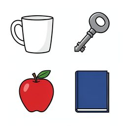
학습자동 쓸만 사물을 2행 2열 격자로 놓는다. 왼쪽 위에 손잡이가 달린 흰색 낱개 하나 머그컵 하나. 오른쪽 위에 금속 열쇠 낱개 하나 열쇠 하나. 왼쪽 아래에 빨강 꼭지가 달린 낱개 하나 사과 하나. 오른쪽 아래에 파란색 표지의 닫힌 낱권 한 권 책 하나. 사물끼리 닿지 않고 넉넉히 떨어져 있다. 배경은 흰 바닥이다.
mistral_small_24bz_image_turbo
Q 방금 본 사물들을 모두 기억하고 있습니다. 방금 본 사물들을 모두 적어보세요. A 머그컵, 열쇠, 사과, 안경
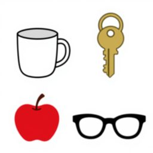
학습자동 쓸만 사물을 2행 2열 격자로 놓는다. 왼쪽 위에 손잡이 달린 흰색 낱개 머그컵 하나. 오른쪽 위에 열쇠고리 없는 금속 낱개 하나 열쇠 하나. 왼쪽 아래에 빨강 사과 하나. 오른쪽 아래에 검은 뿔테 안경 하나. 사물끼리 닿지 않고 넉넉히 떨어져 있다. 배경은 흰 바닥이다.
qwen38_27bflux2_klein_4b
Q 방금 본 사물을 모두 말해 주세요. A 머그컵, 열쇠, 사과, 안경
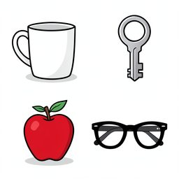
학습자동 쓸만 사물을 2행 2열 격자로 놓는다. 왼쪽 위에 손잡이 달린 흰색 머그컵 하나 머그컵 하나. 오른쪽 위에 열쇠고리 없는 금속 열쇠 하나 열쇠 하나. 왼쪽 아래에 빨강 빨간 사과 하나 사과 하나. 오른쪽 아래에 검은 뿔테 안경 한 벌 안경 하나. 사물끼리 닿지 않고 넉넉히 떨어져 있다. 배경은 흰 바닥이 보인다이다.
qwen38_27bqwen_image_2512
Q 방금 본 사물을 모두 말해 주세요. A 머그컵, 열쇠, 사과, 안경
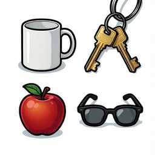
학습자동 못씀 사물을 2행 2열 격자로 놓는다. 왼쪽 위에 손잡이 달린 흰색 머그컵 하나 머그컵 하나. 오른쪽 위에 열쇠고리 없는 금속 열쇠 하나 열쇠 하나. 왼쪽 아래에 빨강 빨간 사과 하나 사과 하나. 오른쪽 아래에 검은 뿔테 안경 한 벌 안경 하나. 사물끼리 닿지 않고 넉넉히 떨어져 있다. 배경은 흰 바닥이 보인다이다.
MEM_02기억력지연 재인재인 기억
재인 기억 · 응답 choice4
mistral_small_24bflux2_klein_4b
Q 이전 단계에서 본 그림 중 어떤 것이 기억나나요? A 1
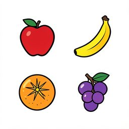
학습자동 쓸만 사물을 2행 2열 격자로 놓는다. 왼쪽 위에 빨강 사과 하나. 오른쪽 위에 노랑 바나나 하나. 왼쪽 아래에 주황 오렌지 하나. 오른쪽 아래에 보라 포도 하나. 사물끼리 닿지 않고 넉넉히 떨어져 있다. 배경은 흰 바닥이다.
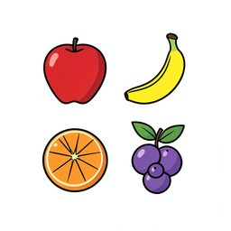
검사 보기 1자동 쓸만 사물을 2행 2열 격자로 놓는다. 왼쪽 위에 빨강 사과 하나. 오른쪽 위에 노랑 바나나 하나. 왼쪽 아래에 주황 오렌지 하나. 오른쪽 아래에 보라 포도 하나. 사물끼리 닿지 않고 넉넉히 떨어져 있다. 배경은 흰 바닥이다.
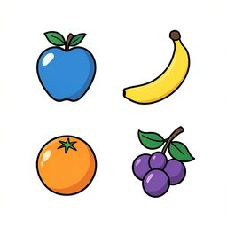
검사 보기 2자동 쓸만 사물을 2행 2열 격자로 놓는다. 왼쪽 위에 파랑 사과 하나. 오른쪽 위에 노랑 바나나 하나. 왼쪽 아래에 주황 오렌지 하나. 오른쪽 아래에 보라 포도 하나. 사물끼리 닿지 않고 넉넉히 떨어져 있다. 배경은 흰 바닥이다.
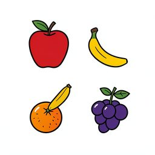
검사 보기 3자동 못씀 사물을 2행 2열 격자로 놓는다. 왼쪽 위에 빨강 사과 하나. 왼쪽 아래에 노랑 바나나 하나. 왼쪽 아래에 주황 오렌지 하나. 오른쪽 아래에 보라 포도 하나. 사물끼리 닿지 않고 넉넉히 떨어져 있다. 배경은 흰 바닥이다.
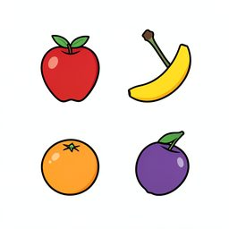
검사 보기 4자동 쓸만 사물을 2행 2열 격자로 놓는다. 왼쪽 위에 빨강 사과 하나. 오른쪽 위에 노랑 바나나 하나. 왼쪽 아래에 주황 오렌지 하나 (작게). 오른쪽 아래에 보라 포도 하나. 사물끼리 닿지 않고 넉넉히 떨어져 있다. 배경은 흰 바닥이다.
MEM_03기억력위치 변화 탐지공간 기억
공간 기억 · 응답 open
qwen38_27bqwen_image_2512_lightning
Q 첫 번째 그림과 두 번째 그림을 비교했을 때, 자리가 바뀐 사물의 이름을 말해 주세요. A 열쇠
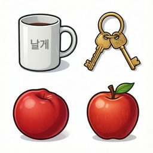
학습자동 못씀 사물을 2행 2열 격자로 놓는다. 왼쪽 위에 손잡이 달린 흰색 낱개 머그컵 하나. 오른쪽 위에 열쇠고리 없는 금속 낱개 하나 열쇠 하나. 왼쪽 아래에 빨강 빨간색 원형 낱개 하나 사과 하나. 사물끼리 닿지 않고 넉넉히 떨어져 있다. 배경은 흰 바닥이 보인다이다.
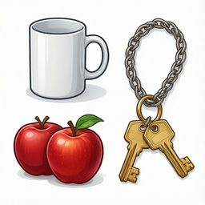
검사자동 못씀 사물을 2행 2열 격자로 놓는다. 왼쪽 위에 손잡이 달린 흰색 낱개 머그컵 하나. 오른쪽 아래에 열쇠고리 없는 금속 낱개 하나 열쇠 하나. 왼쪽 아래에 빨강 빨간색 원형 낱개 하나 사과 하나. 사물끼리 닿지 않고 넉넉히 떨어져 있다. 배경은 흰 바닥이 보인다이다.
MEM_04기억력쌍 연합 학습연합 기억
연합 기억 · 응답 choice4
mistral_small_24bqwen_image_2512
Q 이전 단계에서 본 두 개의 사물 중 어떤 것이 색이 다른가요? A 2
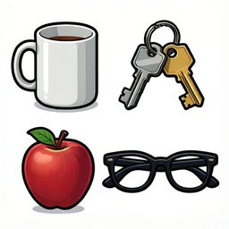
학습자동 못씀 사물을 2행 2열 격자로 놓는다. 왼쪽 위에 손잡이 달린 흰색 낱개 머그컵 하나. 오른쪽 위에 열쇠고리 없는 금속 낱개 하나 열쇠 하나. 왼쪽 아래에 빨강 사과 하나. 오른쪽 아래에 검은 뿔테 안경 하나. 사물끼리 닿지 않고 넉넉히 떨어져 있다. 배경은 흰 바닥이다.
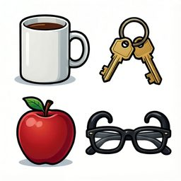
검사 보기 1자동 못씀 사물을 2행 2열 격자로 놓는다. 왼쪽 위에 손잡이 달린 흰색 낱개 머그컵 하나. 오른쪽 위에 열쇠고리 없는 금속 낱개 하나 열쇠 하나. 왼쪽 아래에 빨강 사과 하나. 오른쪽 아래에 검은 뿔테 안경 하나. 사물끼리 닿지 않고 넉넉히 떨어져 있다. 배경은 흰 바닥이다.
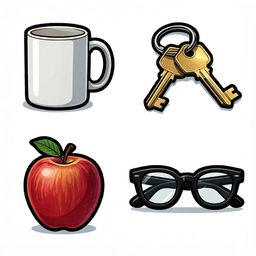
검사 보기 2자동 못씀 사물을 2행 2열 격자로 놓는다. 왼쪽 위에 손잡이 달린 흰색 낱개 머그컵 하나. 오른쪽 위에 열쇠고리 없는 금속 낱개 하나 열쇠 하나. 오른쪽 아래에 빨강 사과 하나. 오른쪽 아래에 검은 뿔테 안경 하나. 사물끼리 닿지 않고 넉넉히 떨어져 있다. 배경은 흰 바닥이다.
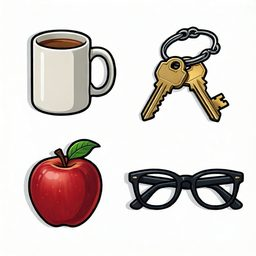
검사 보기 3자동 못씀 사물을 2행 2열 격자로 놓는다. 왼쪽 위에 손잡이 달린 흰색 낱개 머그컵 하나. 오른쪽 위에 열쇠고리 없는 금속 낱개 하나 열쇠 하나. 왼쪽 위에 빨강 사과 하나. 오른쪽 아래에 검은 뿔테 안경 하나. 사물끼리 닿지 않고 넉넉히 떨어져 있다. 배경은 흰 바닥이다.
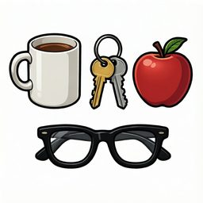
검사 보기 4자동 못씀 사물을 2행 2열 격자로 놓는다. 왼쪽 위에 손잡이 달린 흰색 낱개 머그컵 하나. 오른쪽 위에 열쇠고리 없는 금속 낱개 하나 열쇠 하나. 오른쪽 위에 빨강 사과 하나. 오른쪽 아래에 검은 뿔테 안경 하나. 사물끼리 닿지 않고 넉넉히 떨어져 있다. 배경은 흰 바닥이다.
MEM_05기억력시각 무늬 재인비언어 재인
비언어 재인 · 응답 choice4
mistral_small_24bqwen_image_2512
Q 이전 단계에서 본 무늬를 찾아보세요. A 1
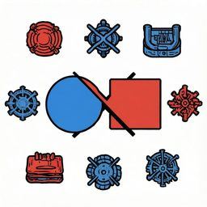
학습자동 못씀 가운데 중간에 파란색 원과 빨간색 사각형이 교차하는 무늬 무늬 하나. 사물끼리 닿지 않고 넉넉히 떨어져 있다. 배경은 흰 바닥이다.
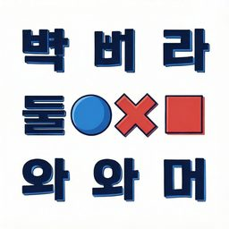
검사 보기 1자동 못씀 가운데 중간에 파란색 원과 빨간색 사각형이 교차하는 무늬 무늬 하나. 사물끼리 닿지 않고 넉넉히 떨어져 있다. 배경은 흰 바닥이다.
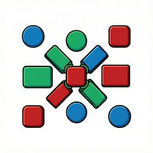
검사 보기 2자동 못씀 가운데 중간에 녹색 파란색 원과 빨간색 사각형이 교차하는 무늬 무늬 하나. 사물끼리 닿지 않고 넉넉히 떨어져 있다. 배경은 흰 바닥이다.
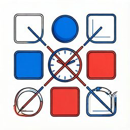
검사 보기 3자동 못씀 가운데 중간에 파란색 원과 빨간색 사각형이 교차하는 무늬 무늬 하나 (시계 방향 90도 돌아간 상태). 사물끼리 닿지 않고 넉넉히 떨어져 있다. 배경은 흰 바닥이다.
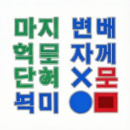
검사 보기 4자동 못씀 오른쪽 아래에 파란색 원과 빨간색 사각형이 교차하는 무늬 무늬 하나. 사물끼리 닿지 않고 넉넉히 떨어져 있다. 배경은 흰 바닥이다.
MEM_06기억력제시 순서 기억순서 기억
순서 기억 · 응답 choice4
gpt6_solqwen_image_2512
Q 처음에 본 물건들의 왼쪽에서 오른쪽 순서와 같은 것은 몇 번인가요? A 3
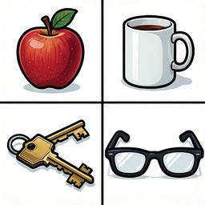
학습자동 못씀 사물을 1행 4열 격자로 놓는다. 첫째 칸에 빨간 사과 낱개 하나 사과 하나. 둘째 칸에 손잡이 달린 흰색 머그컵 낱개 하나 머그컵 하나. 셋째 칸에 열쇠고리 없는 금속 열쇠 낱개 하나 열쇠 하나. 넷째 칸에 검은 뿔테 안경 낱개 하나 안경 하나. 사물끼리 닿지 않고 넉넉히 떨어져 있다. 배경은 흰 바닥이 보인다이다.
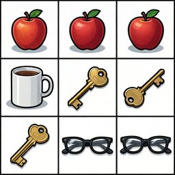
검사 보기 1자동 못씀 사물을 1행 4열 격자로 놓는다. 둘째 칸에 빨간 사과 낱개 하나 사과 하나. 첫째 칸에 손잡이 달린 흰색 머그컵 낱개 하나 머그컵 하나. 셋째 칸에 열쇠고리 없는 금속 열쇠 낱개 하나 열쇠 하나. 넷째 칸에 검은 뿔테 안경 낱개 하나 안경 하나. 사물끼리 닿지 않고 넉넉히 떨어져 있다. 배경은 흰 바닥이 보인다이다.
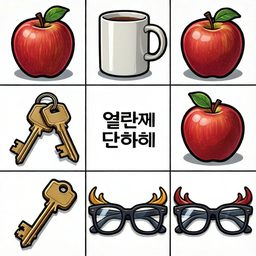
검사 보기 2자동 못씀 사물을 1행 4열 격자로 놓는다. 첫째 칸에 빨간 사과 낱개 하나 사과 하나. 셋째 칸에 손잡이 달린 흰색 머그컵 낱개 하나 머그컵 하나. 둘째 칸에 열쇠고리 없는 금속 열쇠 낱개 하나 열쇠 하나. 넷째 칸에 검은 뿔테 안경 낱개 하나 안경 하나. 사물끼리 닿지 않고 넉넉히 떨어져 있다. 배경은 흰 바닥이 보인다이다.
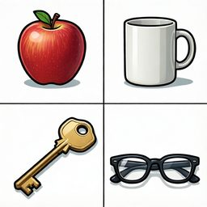
검사 보기 3자동 못씀 사물을 1행 4열 격자로 놓는다. 첫째 칸에 빨간 사과 낱개 하나 사과 하나. 둘째 칸에 손잡이 달린 흰색 머그컵 낱개 하나 머그컵 하나. 셋째 칸에 열쇠고리 없는 금속 열쇠 낱개 하나 열쇠 하나. 넷째 칸에 검은 뿔테 안경 낱개 하나 안경 하나. 사물끼리 닿지 않고 넉넉히 떨어져 있다. 배경은 흰 바닥이 보인다이다.
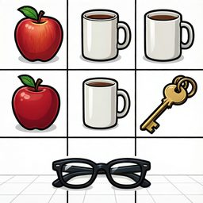
검사 보기 4자동 못씀 사물을 1행 4열 격자로 놓는다. 첫째 칸에 빨간 사과 낱개 하나 사과 하나. 둘째 칸에 손잡이 달린 흰색 머그컵 낱개 하나 머그컵 하나. 넷째 칸에 열쇠고리 없는 금속 열쇠 낱개 하나 열쇠 하나. 셋째 칸에 검은 뿔테 안경 낱개 하나 안경 하나. 사물끼리 닿지 않고 넉넉히 떨어져 있다. 배경은 흰 바닥이 보인다이다.
MEM_07기억력사물 삭제 탐지변화 탐지
변화 탐지 · 응답 open
gpt6_solflux2_klein_4b
Q 처음에 보았던 물건 중 지금 사라진 것은 무엇인가요? A 빗
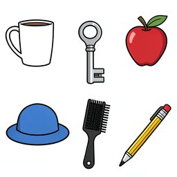
학습자동 쓸만 사물을 2행 3열 격자로 놓는다. 왼쪽 위에 손잡이가 달린 흰색 낱개 하나 머그컵 하나. 가운데 위에 은색 금속 낱개 하나 열쇠 하나. 오른쪽 위에 빨강 사과 하나. 왼쪽 아래에 챙이 있는 파란색 낱개 하나 모자 하나. 가운데 아래에 빗살이 촘촘한 검은색 낱개 하나 빗 하나. 오른쪽 아래에 뾰족하게 깎인 노란색 낱개 하나
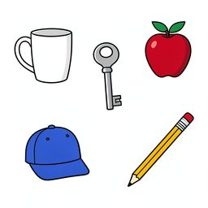
검사자동 쓸만 사물을 2행 3열 격자로 놓는다. 왼쪽 위에 손잡이가 달린 흰색 낱개 하나 머그컵 하나. 가운데 위에 은색 금속 낱개 하나 열쇠 하나. 오른쪽 위에 빨강 사과 하나. 왼쪽 아래에 챙이 있는 파란색 낱개 하나 모자 하나. 오른쪽 아래에 뾰족하게 깎인 노란색 낱개 하나 연필 하나. 사물끼리 닿지 않고 넉넉히 떨어져 있다. 배
gpt6_solqwen_image_2512
Q 처음에 보았던 물건 중 지금 사라진 것은 무엇인가요? A 빗
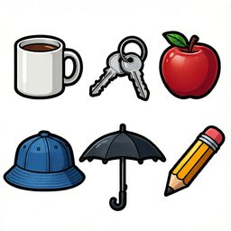
학습자동 못씀 사물을 2행 3열 격자로 놓는다. 왼쪽 위에 손잡이가 달린 흰색 낱개 하나 머그컵 하나. 가운데 위에 은색 금속 낱개 하나 열쇠 하나. 오른쪽 위에 빨강 사과 하나. 왼쪽 아래에 챙이 있는 파란색 낱개 하나 모자 하나. 가운데 아래에 빗살이 촘촘한 검은색 낱개 하나 빗 하나. 오른쪽 아래에 뾰족하게 깎인 노란색 낱개 하나
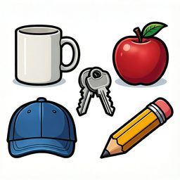
검사자동 못씀 사물을 2행 3열 격자로 놓는다. 왼쪽 위에 손잡이가 달린 흰색 낱개 하나 머그컵 하나. 가운데 위에 은색 금속 낱개 하나 열쇠 하나. 오른쪽 위에 빨강 사과 하나. 왼쪽 아래에 챙이 있는 파란색 낱개 하나 모자 하나. 오른쪽 아래에 뾰족하게 깎인 노란색 낱개 하나 연필 하나. 사물끼리 닿지 않고 넉넉히 떨어져 있다. 배
gpt6_solz_image_turbo
Q 처음에 보았던 물건 중 지금 사라진 것은 무엇인가요? A 빗
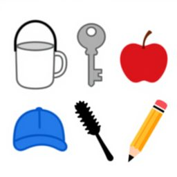
학습자동 못씀 사물을 2행 3열 격자로 놓는다. 왼쪽 위에 손잡이가 달린 흰색 낱개 하나 머그컵 하나. 가운데 위에 은색 금속 낱개 하나 열쇠 하나. 오른쪽 위에 빨강 사과 하나. 왼쪽 아래에 챙이 있는 파란색 낱개 하나 모자 하나. 가운데 아래에 빗살이 촘촘한 검은색 낱개 하나 빗 하나. 오른쪽 아래에 뾰족하게 깎인 노란색 낱개 하나
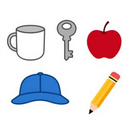
검사자동 쓸만 사물을 2행 3열 격자로 놓는다. 왼쪽 위에 손잡이가 달린 흰색 낱개 하나 머그컵 하나. 가운데 위에 은색 금속 낱개 하나 열쇠 하나. 오른쪽 위에 빨강 사과 하나. 왼쪽 아래에 챙이 있는 파란색 낱개 하나 모자 하나. 오른쪽 아래에 뾰족하게 깎인 노란색 낱개 하나 연필 하나. 사물끼리 닿지 않고 넉넉히 떨어져 있다. 배
qwen38_27bflux2_klein_4b
Q 첫 번째 그림과 두 번째 그림을 비교했을 때, 사라진 사물의 이름을 말해 주세요. A 열쇠
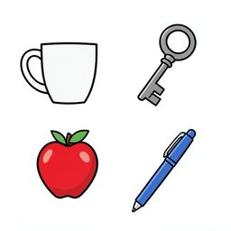
학습자동 쓸만 사물을 2행 2열 격자로 놓는다. 왼쪽 위에 손잡이 달린 흰색 낱개 하나 머그컵 하나. 오른쪽 위에 열쇠고리 없는 금속 낱개 하나 열쇠 하나. 왼쪽 아래에 빨간색 낱개 하나 사과 하나. 오른쪽 아래에 파란색 낱개 하나 볼펜 하나. 사물끼리 닿지 않고 넉넉히 떨어져 있다. 배경은 흰 바닥이 보인다이다.
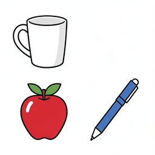
검사자동 쓸만 사물을 2행 2열 격자로 놓는다. 왼쪽 위에 손잡이 달린 흰색 낱개 하나 머그컵 하나. 왼쪽 아래에 빨간색 낱개 하나 사과 하나. 오른쪽 아래에 파란색 낱개 하나 볼펜 하나. 사물끼리 닿지 않고 넉넉히 떨어져 있다. 배경은 흰 바닥이 보인다이다.
qwen38_27bz_image_turbo
Q 첫 번째 그림과 두 번째 그림을 비교했을 때, 사라진 사물의 이름을 말해 주세요. A 열쇠
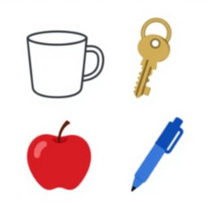
학습자동 못씀 사물을 2행 2열 격자로 놓는다. 왼쪽 위에 손잡이 달린 흰색 낱개 하나 머그컵 하나. 오른쪽 위에 열쇠고리 없는 금속 낱개 하나 열쇠 하나. 왼쪽 아래에 빨간색 낱개 하나 사과 하나. 오른쪽 아래에 파란색 낱개 하나 볼펜 하나. 사물끼리 닿지 않고 넉넉히 떨어져 있다. 배경은 흰 바닥이 보인다이다.
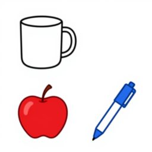
검사자동 쓸만 사물을 2행 2열 격자로 놓는다. 왼쪽 위에 손잡이 달린 흰색 낱개 하나 머그컵 하나. 왼쪽 아래에 빨간색 낱개 하나 사과 하나. 오른쪽 아래에 파란색 낱개 하나 볼펜 하나. 사물끼리 닿지 않고 넉넉히 떨어져 있다. 배경은 흰 바닥이 보인다이다.
MEM_08기억력사물 추가 탐지변화 탐지
변화 탐지 · 응답 open
gpt6_solz_image_turbo
Q 처음 그림과 비교했을 때 새로 나타난 물건은 무엇인가요? A 우산
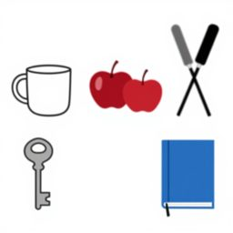
학습자동 못씀 사물을 2행 3열 격자로 놓는다. 왼쪽 위에 손잡이가 달린 흰색 낱개 하나 머그컵 하나. 가운데 위에 빨간 사과 낱개 하나 사과 하나. 오른쪽 위에 검은색 손잡이 빗 낱개 하나 빗 하나. 왼쪽 아래에 은색 금속 열쇠 낱개 하나 열쇠 하나. 가운데 아래에 파란 표지의 닫힌 책 한 권 책 하나. 사물끼리 닿지 않고 넉넉히 떨
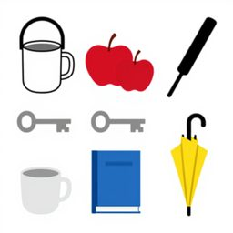
검사자동 못씀 사물을 2행 3열 격자로 놓는다. 왼쪽 위에 손잡이가 달린 흰색 낱개 하나 머그컵 하나. 가운데 위에 빨간 사과 낱개 하나 사과 하나. 오른쪽 위에 검은색 손잡이 빗 낱개 하나 빗 하나. 왼쪽 아래에 은색 금속 열쇠 낱개 하나 열쇠 하나. 가운데 아래에 파란 표지의 닫힌 책 한 권 책 하나. 오른쪽 아래에 손잡이가 굽은
mistral_small_24bqwen_image_2512_lightning
Q 이전과 비교했을 때 추가된 사물을 말해보세요. A 사과
학습자동 못씀 사물을 2행 2열 격자로 놓는다. 왼쪽 위에 손잡이 달린 흰색 낱개 머그컵 하나. 오른쪽 위에 열쇠고리 없는 금속 낱개 하나 열쇠 하나. 왼쪽 아래에 검은 뿔테 안경 하나. 사물끼리 닿지 않고 넉넉히 떨어져 있다. 배경은 흰 바닥이다.
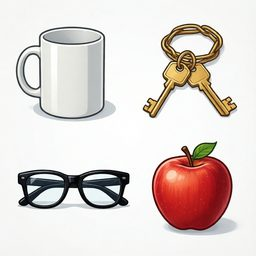
검사자동 못씀 사물을 2행 2열 격자로 놓는다. 왼쪽 위에 손잡이 달린 흰색 낱개 머그컵 하나. 오른쪽 위에 열쇠고리 없는 금속 낱개 하나 열쇠 하나. 왼쪽 아래에 검은 뿔테 안경 하나. 오른쪽 아래에 빨강 사과 하나. 사물끼리 닿지 않고 넉넉히 떨어져 있다. 배경은 흰 바닥이다.
mistral_small_24bz_image_turbo
Q 이전과 비교했을 때 추가된 사물을 말해보세요. A 사과
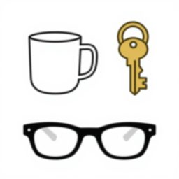
학습자동 쓸만 사물을 2행 2열 격자로 놓는다. 왼쪽 위에 손잡이 달린 흰색 낱개 머그컵 하나. 오른쪽 위에 열쇠고리 없는 금속 낱개 하나 열쇠 하나. 왼쪽 아래에 검은 뿔테 안경 하나. 사물끼리 닿지 않고 넉넉히 떨어져 있다. 배경은 흰 바닥이다.
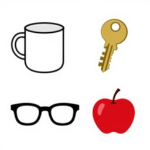
검사자동 쓸만 사물을 2행 2열 격자로 놓는다. 왼쪽 위에 손잡이 달린 흰색 낱개 머그컵 하나. 오른쪽 위에 열쇠고리 없는 금속 낱개 하나 열쇠 하나. 왼쪽 아래에 검은 뿔테 안경 하나. 오른쪽 아래에 빨강 사과 하나. 사물끼리 닿지 않고 넉넉히 떨어져 있다. 배경은 흰 바닥이다.
MEM_09기억력속성 변화 탐지세부 기억
세부 기억 · 응답 open
gpt6_solflux2_klein_4b
Q 처음 보았을 때와 색깔이 달라진 물건은 무엇인가요? A 머그컵
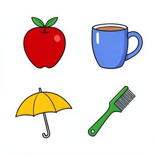
학습자동 못씀 사물을 2행 2열 격자로 놓는다. 왼쪽 위에 빨강 둥근 낱개 하나 사과 하나. 오른쪽 위에 파랑 손잡이가 달린 도자기 컵 낱개 하나 머그컵 하나. 왼쪽 아래에 노랑 접힌 우산 낱개 하나 우산 하나. 오른쪽 아래에 초록 손잡이가 달린 빗 낱개 하나 빗 하나. 사물끼리 닿지 않고 넉넉히 떨어져 있다. 배경은 흰 바닥이다.
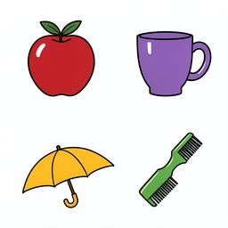
검사자동 못씀 사물을 2행 2열 격자로 놓는다. 왼쪽 위에 빨강 둥근 낱개 하나 사과 하나. 오른쪽 위에 보라 손잡이가 달린 도자기 컵 낱개 하나 머그컵 하나. 왼쪽 아래에 노랑 접힌 우산 낱개 하나 우산 하나. 오른쪽 아래에 초록 손잡이가 달린 빗 낱개 하나 빗 하나. 사물끼리 닿지 않고 넉넉히 떨어져 있다. 배경은 흰 바닥이다.
gpt6_solqwen_image_2512
Q 처음 보았을 때와 색깔이 달라진 물건은 무엇인가요? A 머그컵
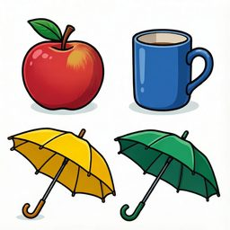
학습자동 못씀 사물을 2행 2열 격자로 놓는다. 왼쪽 위에 빨강 둥근 낱개 하나 사과 하나. 오른쪽 위에 파랑 손잡이가 달린 도자기 컵 낱개 하나 머그컵 하나. 왼쪽 아래에 노랑 접힌 우산 낱개 하나 우산 하나. 오른쪽 아래에 초록 손잡이가 달린 빗 낱개 하나 빗 하나. 사물끼리 닿지 않고 넉넉히 떨어져 있다. 배경은 흰 바닥이다.
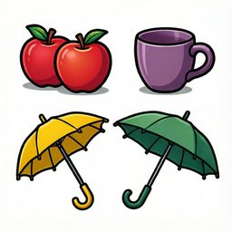
검사자동 못씀 사물을 2행 2열 격자로 놓는다. 왼쪽 위에 빨강 둥근 낱개 하나 사과 하나. 오른쪽 위에 보라 손잡이가 달린 도자기 컵 낱개 하나 머그컵 하나. 왼쪽 아래에 노랑 접힌 우산 낱개 하나 우산 하나. 오른쪽 아래에 초록 손잡이가 달린 빗 낱개 하나 빗 하나. 사물끼리 닿지 않고 넉넉히 떨어져 있다. 배경은 흰 바닥이다.
gpt6_solqwen_image_2512_lightning
Q 처음 보았을 때와 색깔이 달라진 물건은 무엇인가요? A 머그컵
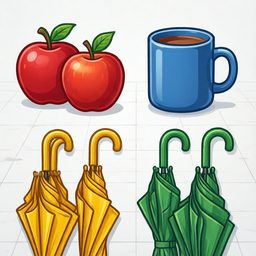
학습자동 못씀 사물을 2행 2열 격자로 놓는다. 왼쪽 위에 빨강 둥근 낱개 하나 사과 하나. 오른쪽 위에 파랑 손잡이가 달린 도자기 컵 낱개 하나 머그컵 하나. 왼쪽 아래에 노랑 접힌 우산 낱개 하나 우산 하나. 오른쪽 아래에 초록 손잡이가 달린 빗 낱개 하나 빗 하나. 사물끼리 닿지 않고 넉넉히 떨어져 있다. 배경은 흰 바닥이다.
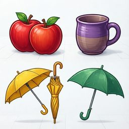
검사자동 못씀 사물을 2행 2열 격자로 놓는다. 왼쪽 위에 빨강 둥근 낱개 하나 사과 하나. 오른쪽 위에 보라 손잡이가 달린 도자기 컵 낱개 하나 머그컵 하나. 왼쪽 아래에 노랑 접힌 우산 낱개 하나 우산 하나. 오른쪽 아래에 초록 손잡이가 달린 빗 낱개 하나 빗 하나. 사물끼리 닿지 않고 넉넉히 떨어져 있다. 배경은 흰 바닥이다.
mistral_small_24bz_image_turbo
Q 이전과 다른 사물은 무엇인가요? A 사과
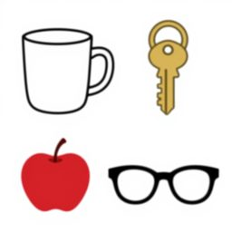
학습자동 쓸만 사물을 2행 2열 격자로 놓는다. 왼쪽 위에 손잡이 달린 흰색 낱개 머그컵 하나. 오른쪽 위에 열쇠고리 없는 금속 낱개 하나 열쇠 하나. 왼쪽 아래에 빨강 사과 하나. 오른쪽 아래에 검은 뿔테 안경 하나. 사물끼리 닿지 않고 넉넉히 떨어져 있다. 배경은 흰 바닥이다.
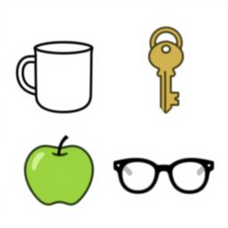
검사자동 쓸만 사물을 2행 2열 격자로 놓는다. 왼쪽 위에 손잡이 달린 흰색 낱개 머그컵 하나. 오른쪽 위에 열쇠고리 없는 금속 낱개 하나 열쇠 하나. 왼쪽 아래에 초록 사과 하나. 오른쪽 아래에 검은 뿔테 안경 하나. 사물끼리 닿지 않고 넉넉히 떨어져 있다. 배경은 흰 바닥이다.
MEM_10기억력장면 세부 기억일화 기억
일화 기억 · 응답 choice4
mistral_small_24bqwen_image_2512_lightning
Q 이전 장면을 기억하고 있습니다. 다음 중 이전 장면과 가장 비슷한 장면을 선택하세요. A 1
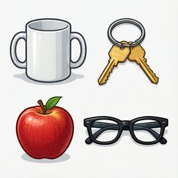
학습자동 못씀 사물을 2행 2열 격자로 놓는다. 왼쪽 위에 손잡이 달린 흰색 낱개 머그컵 하나. 오른쪽 위에 열쇠고리 없는 금속 낱개 하나 열쇠 하나. 왼쪽 아래에 빨강 사과 하나. 오른쪽 아래에 검은 뿔테 안경 하나. 사물끼리 닿지 않고 넉넉히 떨어져 있다. 배경은 흰 바닥이다.
검사 보기 1자동 못씀 사물을 2행 2열 격자로 놓는다. 왼쪽 위에 손잡이 달린 흰색 낱개 머그컵 하나. 오른쪽 위에 열쇠고리 없는 금속 낱개 하나 열쇠 하나. 왼쪽 아래에 빨강 사과 하나. 오른쪽 아래에 검은 뿔테 안경 하나. 사물끼리 닿지 않고 넉넉히 떨어져 있다. 배경은 흰 바닥이다.
검사 보기 2자동 못씀 사물을 2행 2열 격자로 놓는다. 왼쪽 위에 손잡이 달린 흰색 낱개 머그컵 하나. 오른쪽 위에 열쇠고리 없는 금속 낱개 하나 열쇠 하나. 왼쪽 아래에 초록 사과 하나. 오른쪽 아래에 검은 뿔테 안경 하나. 사물끼리 닿지 않고 넉넉히 떨어져 있다. 배경은 흰 바닥이다.
검사 보기 3자동 못씀 사물을 2행 2열 격자로 놓는다. 왼쪽 위에 손잡이 달린 흰색 낱개 머그컵 하나. 오른쪽 아래에 열쇠고리 없는 금속 낱개 하나 열쇠 하나. 왼쪽 아래에 빨강 사과 하나. 오른쪽 아래에 검은 뿔테 안경 하나. 사물끼리 닿지 않고 넉넉히 떨어져 있다. 배경은 흰 바닥이다.
검사 보기 4자동 못씀 사물을 2행 2열 격자로 놓는다. 왼쪽 위에 손잡이 달린 흰색 낱개 머그컵 하나. 오른쪽 위에 열쇠고리 없는 금속 낱개 하나 열쇠 하나. 왼쪽 아래에 빨강 사과 하나. 사물끼리 닿지 않고 넉넉히 떨어져 있다. 배경은 흰 바닥이다.
mistral_small_24bz_image_turbo
Q 이전 장면을 기억하고 있습니다. 다음 중 이전 장면과 가장 비슷한 장면을 선택하세요. A 1
학습자동 못씀 사물을 2행 2열 격자로 놓는다. 왼쪽 위에 손잡이 달린 흰색 낱개 머그컵 하나. 오른쪽 위에 열쇠고리 없는 금속 낱개 하나 열쇠 하나. 왼쪽 아래에 빨강 사과 하나. 오른쪽 아래에 검은 뿔테 안경 하나. 사물끼리 닿지 않고 넉넉히 떨어져 있다. 배경은 흰 바닥이다.
검사 보기 1자동 쓸만 사물을 2행 2열 격자로 놓는다. 왼쪽 위에 손잡이 달린 흰색 낱개 머그컵 하나. 오른쪽 위에 열쇠고리 없는 금속 낱개 하나 열쇠 하나. 왼쪽 아래에 빨강 사과 하나. 오른쪽 아래에 검은 뿔테 안경 하나. 사물끼리 닿지 않고 넉넉히 떨어져 있다. 배경은 흰 바닥이다.
검사 보기 2자동 쓸만 사물을 2행 2열 격자로 놓는다. 왼쪽 위에 손잡이 달린 흰색 낱개 머그컵 하나. 오른쪽 위에 열쇠고리 없는 금속 낱개 하나 열쇠 하나. 왼쪽 아래에 초록 사과 하나. 오른쪽 아래에 검은 뿔테 안경 하나. 사물끼리 닿지 않고 넉넉히 떨어져 있다. 배경은 흰 바닥이다.
검사 보기 3자동 못씀 사물을 2행 2열 격자로 놓는다. 왼쪽 위에 손잡이 달린 흰색 낱개 머그컵 하나. 오른쪽 아래에 열쇠고리 없는 금속 낱개 하나 열쇠 하나. 왼쪽 아래에 빨강 사과 하나. 오른쪽 아래에 검은 뿔테 안경 하나. 사물끼리 닿지 않고 넉넉히 떨어져 있다. 배경은 흰 바닥이다.
검사 보기 4자동 못씀 사물을 2행 2열 격자로 놓는다. 왼쪽 위에 손잡이 달린 흰색 낱개 머그컵 하나. 오른쪽 위에 열쇠고리 없는 금속 낱개 하나 열쇠 하나. 왼쪽 아래에 빨강 사과 하나. 사물끼리 닿지 않고 넉넉히 떨어져 있다. 배경은 흰 바닥이다.
ATT_01주의력단일 특징 탐색선택 주의
선택 주의 · 응답 open
gpt6_solqwen_image_2512
Q 빨간 원은 모두 몇 개입니까? A 4
main자동 쓸만 사물을 3행 4열 격자로 놓는다. 1열 위에 파랑 같은 크기의 단색 원 하나 원 하나. 2열 위에 빨강 같은 크기의 단색 원 하나 원 하나. 3열 위에 파랑 같은 크기의 단색 원 하나 원 하나. 4열 위에 파랑 같은 크기의 단색 원 하나 원 하나. 1열 가운데에 파랑 같은 크기의 단색 원 하나 원 하나. 2열 가운데에 파
mistral_small_24bflux2_klein_4b
Q 다음 그림에 있는 사과의 개수를 세어 보세요. A 3
main자동 쓸만 왼쪽 위에 빨강 사과 하나. 가운데 중간에 빨강 사과 하나. 오른쪽 아래에 빨강 사과 하나. 사물끼리 닿지 않고 넉넉히 떨어져 있다. 배경은 흰 바닥이다.
mistral_small_24bqwen_image_2512
Q 다음 그림에 있는 사과의 개수를 세어 보세요. A 3
main자동 쓸만 왼쪽 위에 빨강 사과 하나. 가운데 중간에 빨강 사과 하나. 오른쪽 아래에 빨강 사과 하나. 사물끼리 닿지 않고 넉넉히 떨어져 있다. 배경은 흰 바닥이다.
qwen38_27bqwen_image_2512_lightning
Q 빨간색 원형 버튼을 모두 찾아 개수를 답하세요. A 4
main자동 쓸만 사물을 3행 3열 격자로 놓는다. 왼쪽 위에 빨강 빨간색 원형 버튼 하나 빨간색 원형 버튼 하나. 가운데 위에 파랑 파란색 원형 버튼 하나 파란색 원형 버튼 하나. 오른쪽 위에 빨강 빨간색 원형 버튼 하나 빨간색 원형 버튼 하나. 왼쪽 가운데에 파랑 파란색 원형 버튼 하나 파란색 원형 버튼 하나. 가운데 가운데에 빨강 빨
Q 다음 그림에서 빨간색 사과와 노란색 사과의 개수를 각각 몇 개인지 말해 주세요. A 3, 2
main자동 못씀 사물을 2행 3열 격자로 놓는다. 왼쪽 위에 빨강 사과 하나. 가운데 위에 빨강 사과 하나. 오른쪽 위에 빨강 사과 하나. 왼쪽 아래에 노랑 사과 하나. 가운데 아래에 노랑 사과 하나. 사물끼리 닿지 않고 넉넉히 떨어져 있다. 배경은 흰 바닥이다.
mistral_small_24bqwen_image_2512_lightning
Q 다음 그림에서 빨간색 사과와 노란색 사과의 개수를 각각 몇 개인지 말해 주세요. A 3, 2
main자동 쓸만 사물을 2행 3열 격자로 놓는다. 왼쪽 위에 빨강 사과 하나. 가운데 위에 빨강 사과 하나. 오른쪽 위에 빨강 사과 하나. 왼쪽 아래에 노랑 사과 하나. 가운데 아래에 노랑 사과 하나. 사물끼리 닿지 않고 넉넉히 떨어져 있다. 배경은 흰 바닥이다.
mistral_small_24bz_image_turbo
Q 다음 그림에서 빨간색 사과와 노란색 사과의 개수를 각각 몇 개인지 말해 주세요. A 3, 2
main자동 못씀 사물을 2행 3열 격자로 놓는다. 왼쪽 위에 빨강 사과 하나. 가운데 위에 빨강 사과 하나. 오른쪽 위에 빨강 사과 하나. 왼쪽 아래에 노랑 사과 하나. 가운데 아래에 노랑 사과 하나. 사물끼리 닿지 않고 넉넉히 떨어져 있다. 배경은 흰 바닥이다.
ATT_03주의력목표 물건 계수계수
계수 · 응답 open
mistral_small_24bqwen_image_2512_lightning
Q 이미지에 있는 사과의 개수를 세어보세요. A 4
main자동 쓸만 왼쪽 위에 빨강 사과 하나. 가운데 중간에 빨강 사과 하나. 가운데 중간에 빨강 사과 하나. 오른쪽 아래에 빨강 사과 하나. 사물끼리 닿지 않고 넉넉히 떨어져 있다. 배경은 흰 바닥이다.
qwen38_27bflux2_klein_4b
Q 그림에서 빨간 사과는 몇 개입니까? A 3
main자동 못씀 사물을 3행 3열 격자로 놓는다. 왼쪽 위에 빨강 빨간색 사과 낱개 하나 사과 하나. 가운데 위에 초록 초록색 사과 낱개 하나 사과 하나. 오른쪽 위에 주황 주황색 오렌지 낱개 하나 오렌지 하나. 왼쪽 가운데에 빨강 빨간색 사과 낱개 하나 사과 하나. 가운데 가운데에 노랑 노란 바나나 낱개 하나 바나나 하나. 오른쪽 가운
qwen38_27bz_image_turbo
Q 그림에서 빨간 사과는 몇 개입니까? A 3
main자동 못씀 사물을 3행 3열 격자로 놓는다. 왼쪽 위에 빨강 빨간색 사과 낱개 하나 사과 하나. 가운데 위에 초록 초록색 사과 낱개 하나 사과 하나. 오른쪽 위에 주황 주황색 오렌지 낱개 하나 오렌지 하나. 왼쪽 가운데에 빨강 빨간색 사과 낱개 하나 사과 하나. 가운데 가운데에 노랑 노란 바나나 낱개 하나 바나나 하나. 오른쪽 가운
ATT_04주의력경계 안쪽 선택 주의공간 선택
공간 선택 · 응답 open
mistral_small_24bqwen_image_2512
Q 다음 그림에서 사과가 몇 개 있나요? A 3
main자동 쓸만 왼쪽 위에 빨강 사과 하나. 가운데 아래에 빨강 사과 하나. 오른쪽 중간에 빨강 사과 하나. 사물끼리 닿지 않고 넉넉히 떨어져 있다. 배경은 흰 바닥이다.
mistral_small_24bz_image_turbo
Q 다음 그림에서 사과가 몇 개 있나요? A 3
main자동 쓸만 왼쪽 위에 빨강 사과 하나. 가운데 아래에 빨강 사과 하나. 오른쪽 중간에 빨강 사과 하나. 사물끼리 닿지 않고 넉넉히 떨어져 있다. 배경은 흰 바닥이다.
qwen38_27bflux2_klein_4b
Q 사각형 테두리 안에 있는 빨간 사과 몇 개? A 3
main자동 못씀 가운데 중간에 빨강 빨간 사과 낱개 하나 사과 하나. 가운데 중간에 빨강 빨간 사과 낱개 하나 사과 하나. 가운데 중간에 빨강 빨간 사과 낱개 하나 사과 하나. 왼쪽 위에 빨강 빨간 사과 낱개 하나 사과 하나. 오른쪽 아래에 빨강 빨간 사과 낱개 하나 사과 하나. 가운데 중간에 파랑 파란 원 낱개 하나 파란 원 하나. 가
ATT_05주의력단일 차이 찾기변화 탐지
변화 탐지 · 응답 open
qwen38_27bflux2_klein_4b
Q 두 그림을 비교해 보세요. 달라진 사물의 이름을 말하세요. A 사과
기준자동 쓸만 사물을 2행 2열 격자로 놓는다. 왼쪽 위에 손잡이 달린 흰색 낱개 하나 머그컵 하나. 오른쪽 위에 열쇠고리 없는 금속 낱개 하나 열쇠 하나. 왼쪽 아래에 빨강 원형 낱개 하나 사과 하나. 오른쪽 아래에 검은 뿔테 낱개 하나 안경 하나. 사물끼리 닿지 않고 넉넉히 떨어져 있다. 배경은 흰 바닥이다.
검사자동 쓸만 사물을 2행 2열 격자로 놓는다. 왼쪽 위에 손잡이 달린 흰색 낱개 하나 머그컵 하나. 오른쪽 위에 열쇠고리 없는 금속 낱개 하나 열쇠 하나. 왼쪽 아래에 파랑 원형 낱개 하나 사과 하나. 오른쪽 아래에 검은 뿔테 낱개 하나 안경 하나. 사물끼리 닿지 않고 넉넉히 떨어져 있다. 배경은 흰 바닥이다.
qwen38_27bz_image_turbo
Q 두 그림을 비교해 보세요. 달라진 사물의 이름을 말하세요. A 사과
기준자동 쓸만 사물을 2행 2열 격자로 놓는다. 왼쪽 위에 손잡이 달린 흰색 낱개 하나 머그컵 하나. 오른쪽 위에 열쇠고리 없는 금속 낱개 하나 열쇠 하나. 왼쪽 아래에 빨강 원형 낱개 하나 사과 하나. 오른쪽 아래에 검은 뿔테 낱개 하나 안경 하나. 사물끼리 닿지 않고 넉넉히 떨어져 있다. 배경은 흰 바닥이다.
검사자동 쓸만 사물을 2행 2열 격자로 놓는다. 왼쪽 위에 손잡이 달린 흰색 낱개 하나 머그컵 하나. 오른쪽 위에 열쇠고리 없는 금속 낱개 하나 열쇠 하나. 왼쪽 아래에 파랑 원형 낱개 하나 사과 하나. 오른쪽 아래에 검은 뿔테 낱개 하나 안경 하나. 사물끼리 닿지 않고 넉넉히 떨어져 있다. 배경은 흰 바닥이다.
ATT_06주의력여러 차이 찾기변화 탐지
변화 탐지 · 응답 open
gpt6_solz_image_turbo
Q 두 장면을 비교하여 달라진 점 세 가지를 모두 말해 주세요. A 머그컵이 왼쪽 위에서 오른쪽 아래로 옮겨졌고, 공이 빨간색에서 파란색으로 바뀌었으며, 열쇠가 사라졌습니다.
기준자동 못씀 사물을 2행 3열 격자로 놓는다. 왼쪽 위에 손잡이가 달린 흰색 낱개 하나 머그컵 하나. 가운데 위에 빨강 매끈한 둥근 공 낱개 하나 공 하나. 오른쪽 위에 표지가 닫힌 초록색 책 한 권 책 하나. 왼쪽 아래에 열쇠고리가 달리지 않은 금속 열쇠 낱개 하나 열쇠 하나. 가운데 아래에 손잡이가 달린 검은색 빗 낱개 하나 빗
검사자동 못씀 사물을 2행 3열 격자로 놓는다. 오른쪽 아래에 손잡이가 달린 흰색 낱개 하나 머그컵 하나. 가운데 위에 파랑 매끈한 둥근 공 낱개 하나 공 하나. 오른쪽 위에 표지가 닫힌 초록색 책 한 권 책 하나. 가운데 아래에 손잡이가 달린 검은색 빗 낱개 하나 빗 하나. 사물끼리 닿지 않고 넉넉히 떨어져 있다. 배경은 흰 바닥이
ATT_07주의력방향 이탈 탐지방향 변별
방향 변별 · 응답 open
gpt6_solqwen_image_2512
Q 다른 물고기들과 반대 방향을 바라보는 물고기는 몇 행 몇 열에 있나요? 맨 위 행과 맨 왼쪽 열부터 1로 세세요. A 2행 3열
main자동 못씀 사물을 3행 4열 격자로 놓는다. 1열 위에 파란색 물고기 낱개 한 마리 물고기 하나 (오른쪽을 향한 상태). 2열 위에 파란색 물고기 낱개 한 마리 물고기 하나 (오른쪽을 향한 상태). 3열 위에 파란색 물고기 낱개 한 마리 물고기 하나 (오른쪽을 향한 상태). 4열 위에 파란색 물고기 낱개 한 마리 물고기 하나 (오른
mistral_small_24bflux2_klein_4b
Q 다음 그림에서 화살표가 가리키는 방향을 적어주세요. A 오른쪽
main자동 쓸만 사물을 1행 1열 격자로 놓는다. 첫째 칸에 검은색 화살표 화살표 하나 (오른쪽을 향한 상태). 사물끼리 닿지 않고 넉넉히 떨어져 있다. 배경은 흰 바닥이다.
qwen38_27bz_image_turbo
Q 화살표 중 방향이 다른 화살표의 좌표를 [행, 열] 순서로 답하세요. 좌표는 0부터 시작합니다. A [2,3]
main자동 못씀 사물을 4행 4열 격자로 놓는다. 1열 1행에 검정 검은색 화살표 낱개 하나 화살표 하나 (오른쪽을 향한 상태). 2열 1행에 검정 검은색 화살표 낱개 하나 화살표 하나 (오른쪽을 향한 상태). 3열 1행에 검정 검은색 화살표 낱개 하나 화살표 하나 (오른쪽을 향한 상태). 4열 1행에 검정 검은색 화살표 낱개 하나 화살
ATT_08주의력겹친 윤곽 분리도형-배경 분리
도형-배경 분리 · 응답 choice4
qwen38_27bqwen_image_2512
Q 첫 번째 그림에 숨어 있는 도형과 같은 방향, 모양, 색을 고르시오. A 1
기준자동 못씀 가운데 중간에 검정 검은색 직선 하나 직선 하나 (시계 방향 25도 돌아간 상태, 크게). 가운데 중간에 검정 검은색 직선 하나 직선 하나 (시계 방향 115도 돌아간 상태, 크게). 가운데 중간에 빨강 위쪽 꼭짓점이 있는 빨간색 정삼각형 윤곽 하나 정삼각형 하나. 가운데 중간에 검정 검은색 직선 하나 직선 하나 (시계
보기 1자동 못씀 가운데 중간에 빨강 위쪽 꼭짓점이 있는 빨간색 정삼각형 윤곽 하나 정삼각형 하나. 사물끼리 닿지 않고 넉넉히 떨어져 있다. 배경은 흰 바닥이다.
보기 2자동 못씀 가운데 중간에 빨강 아래쪽 꼭짓점이 있는 빨간색 정삼각형 윤곽 하나 정삼각형 하나 (시계 방향 180도 돌아간 상태). 사물끼리 닿지 않고 넉넉히 떨어져 있다. 배경은 흰 바닥이다.
보기 3자동 못씀 가운데 중간에 파랑 위쪽 꼭짓점이 있는 파란색 정삼각형 윤곽 하나 정삼각형 하나. 사물끼리 닿지 않고 넉넉히 떨어져 있다. 배경은 흰 바닥이다.
보기 4자동 못씀 가운데 중간에 빨강 빨간색 정사각형 윤곽 하나 정사각형 하나. 사물끼리 닿지 않고 넉넉히 떨어져 있다. 배경은 흰 바닥이다.
ATT_09주의력부분 특징 계수세부 주의
세부 주의 · 응답 open
gpt6_solz_image_turbo
Q 손잡이가 파란색인 컵은 모두 몇 개입니까? A 5
main자동 못씀 사물을 3행 4열 격자로 놓는다. 1열 위에 흰색 몸체와 파란색 손잡이가 달린 낱개 하나 머그컵 하나. 2열 위에 흰색 몸체와 빨간색 손잡이가 달린 낱개 하나 머그컵 하나. 3열 위에 흰색 몸체와 빨간색 손잡이가 달린 낱개 하나 머그컵 하나. 4열 위에 흰색 몸체와 파란색 손잡이가 달린 낱개 하나 머그컵 하나. 1열 가운
mistral_small_24bz_image_turbo
Q 다음 그림에 있는 별의 개수를 세어보세요. A 5
main자동 못씀 왼쪽 위에 노랑 별 하나. 왼쪽 중간에 노랑 별 하나. 가운데 중간에 노랑 별 하나. 오른쪽 아래에 노랑 별 하나. 오른쪽 위에 노랑 별 하나. 사물끼리 닿지 않고 넉넉히 떨어져 있다. 배경은 흰 바닥이다.
qwen38_27bqwen_image_2512
Q 아래 그림에서 빨간색이고 위쪽을 가리키는 화살표는 몇 개인가요? A 3
main자동 못씀 사물을 3행 3열 격자로 놓는다. 왼쪽 위에 빨강 화살표 하나 화살표 하나 (위을 향한 상태). 가운데 위에 파랑 화살표 하나 화살표 하나 (위을 향한 상태). 오른쪽 위에 빨강 화살표 하나 화살표 하나 (아래을 향한 상태). 왼쪽 가운데에 빨강 화살표 하나 화살표 하나 (위을 향한 상태). 가운데 가운데에 파랑 화살표
ATT_10주의력지정 구역 선택 주의주의 억제
주의 억제 · 응답 open
mistral_small_24bflux2_klein_4b
Q 다음 그림에서 빨간색 사과가 몇 개 있나요? A 2
main자동 쓸만 사물을 2행 3열 격자로 놓는다. 왼쪽 위에 빨강 사과 하나. 가운데 위에 빨강 사과 하나. 오른쪽 위에 녹색 사과 하나. 왼쪽 아래에 손잡이 달린 흰색 낱개 머그컵 하나. 가운데 아래에 열쇠고리 없는 금속 낱개 하나 열쇠 하나. 오른쪽 아래에 검은 뿔테 안경 하나. 사물끼리 닿지 않고 넉넉히 떨어져 있다. 배경은 흰 바
mistral_small_24bz_image_turbo
Q 다음 그림에서 빨간색 사과가 몇 개 있나요? A 2
main자동 쓸만 사물을 2행 3열 격자로 놓는다. 왼쪽 위에 빨강 사과 하나. 가운데 위에 빨강 사과 하나. 오른쪽 위에 녹색 사과 하나. 왼쪽 아래에 손잡이 달린 흰색 낱개 머그컵 하나. 가운데 아래에 열쇠고리 없는 금속 낱개 하나 열쇠 하나. 오른쪽 아래에 검은 뿔테 안경 하나. 사물끼리 닿지 않고 넉넉히 떨어져 있다. 배경은 흰 바
LAN_01언어능력고빈도 사물 이름 대기이름 대기
이름 대기 · 응답 open
gpt6_solflux2_klein_4b
Q 이 물건의 이름은 무엇인가요? A 숟가락
main자동 쓸만 사물을 1행 1열 격자로 놓는다. 첫째 칸에 타원형의 오목한 부분과 긴 손잡이가 이어진 은색 금속 낱개 하나 숟가락 하나. 사물끼리 닿지 않고 넉넉히 떨어져 있다. 배경은 흰 바닥이다.
mistral_small_24bqwen_image_2512_lightning
Q 이미지에 있는 사물 이름을 모두 말해보세요. A 사과, 바나나, 오렌지, 포도
main자동 쓸만 사물을 2행 2열 격자로 놓는다. 왼쪽 위에 빨강 사과 하나. 오른쪽 위에 노랑 바나나 하나. 왼쪽 아래에 주황 오렌지 하나. 오른쪽 아래에 보라 포도 하나. 사물끼리 닿지 않고 넉넉히 떨어져 있다. 배경은 흰 바닥이다.
qwen38_27bflux2_klein_4b
Q 그림에 있는 사물의 이름을 말해 주세요. A 사과
main자동 쓸만 사물을 1행 1열 격자로 놓는다. 첫째 칸에 빨강 빨간 사과 낱개 하나 사과 하나. 사물끼리 닿지 않고 넉넉히 떨어져 있다. 배경은 흰 바닥이 보인다이다.
qwen38_27bqwen_image_2512
Q 그림에 있는 사물의 이름을 말해 주세요. A 사과
main자동 못씀 사물을 1행 1열 격자로 놓는다. 첫째 칸에 빨강 빨간 사과 낱개 하나 사과 하나. 사물끼리 닿지 않고 넉넉히 떨어져 있다. 배경은 흰 바닥이 보인다이다.
LAN_02언어능력저빈도 사물 이름 대기이름 대기
이름 대기 · 응답 open
qwen38_27bz_image_turbo
Q 그림에 있는 사물의 이름을 말해 주세요. A 거북선
main자동 못씀 가운데 중간에 등에 뿔이 달린 조선시대 전함, 갑판 위에 뿔이 여러 개, 검은색 갑판과 갈색 돛대 거북선 하나. 사물끼리 닿지 않고 넉넉히 떨어져 있다. 배경은 흰 바닥이 보인다이다.
LAN_03언어능력신체 부위 명명어휘 인출
어휘 인출 · 응답 open
mistral_small_24bflux2_klein_4b
Q 이 그림에서 보이는 신체 부위를 모두 말해보세요. A 눈, 코, 입, 귀
main자동 쓸만 왼쪽 위에 왼쪽 눈 눈 하나. 오른쪽 위에 오른쪽 눈 눈 하나. 가운데 중간에 코 코 하나. 가운데 중간에 입 입 하나. 왼쪽 중간에 왼쪽 귀 귀 하나. 오른쪽 중간에 오른쪽 귀 귀 하나. 사물끼리 닿지 않고 넉넉히 떨어져 있다. 배경은 흰 바닥이다.
mistral_small_24bqwen_image_2512
Q 이 그림에서 보이는 신체 부위를 모두 말해보세요. A 눈, 코, 입, 귀
main자동 쓸만 왼쪽 위에 왼쪽 눈 눈 하나. 오른쪽 위에 오른쪽 눈 눈 하나. 가운데 중간에 코 코 하나. 가운데 중간에 입 입 하나. 왼쪽 중간에 왼쪽 귀 귀 하나. 오른쪽 중간에 오른쪽 귀 귀 하나. 사물끼리 닿지 않고 넉넉히 떨어져 있다. 배경은 흰 바닥이다.
qwen38_27bqwen_image_2512
Q 그림에서 사각형으로 표시된 신체 부위를 말해 주세요. A 코
main자동 못씀 사물을 3행 3열 격자로 놓는다. 왼쪽 위에 단순한 만화 눈, 검은색, 낱개 하나 눈 하나. 오른쪽 위에 단순한 만화 눈, 검은색, 낱개 하나 눈 하나. 왼쪽 가운데에 단순한 만화 귀, 살색, 낱개 하나 귀 하나. 가운데 가운데에 단순한 만화 코, 살색, 낱개 하나 코 하나. 오른쪽 가운데에 단순한 만화 귀, 살색, 낱개
qwen38_27bqwen_image_2512_lightning
Q 그림에서 사각형으로 표시된 신체 부위를 말해 주세요. A 코
main자동 못씀 사물을 3행 3열 격자로 놓는다. 왼쪽 위에 단순한 만화 눈, 검은색, 낱개 하나 눈 하나. 오른쪽 위에 단순한 만화 눈, 검은색, 낱개 하나 눈 하나. 왼쪽 가운데에 단순한 만화 귀, 살색, 낱개 하나 귀 하나. 가운데 가운데에 단순한 만화 코, 살색, 낱개 하나 코 하나. 오른쪽 가운데에 단순한 만화 귀, 살색, 낱개
qwen38_27b_noparserflux2_klein_4b
Q 그림에 있는 신체 부위를 말해 주세요. A 코
main자동 쓸만 가운데 중간에 살색 사람 코 하나, 측면에서 본 단순한 윤곽, 콧등과 콧구멍이 보이는 낱개 코 하나. 사물끼리 닿지 않고 넉넉히 떨어져 있다. 배경은 흰 바닥이 보인다이다.
LAN_04언어능력사물의 부분 명명부분 어휘
부분 어휘 · 응답 open
mistral_small_24bflux2_klein_4b
Q 이 그림에서 손잡이 달린 흰색 낱개와 열쇠고리 없는 금속 낱개 하나, 빨간 사과, 검은 뿔테 안경이 각각 무엇인가요? A 머그컵, 열쇠, 사과, 안경
main자동 쓸만 사물을 2행 2열 격자로 놓는다. 왼쪽 위에 손잡이 달린 흰색 낱개 머그컵 하나. 오른쪽 위에 열쇠고리 없는 금속 낱개 하나 열쇠 하나. 왼쪽 아래에 빨강 사과 하나. 오른쪽 아래에 검은 뿔테 안경 하나. 사물끼리 닿지 않고 넉넉히 떨어져 있다. 배경은 흰 바닥이다.
qwen38_27bflux2_klein_4b
Q 그림에서 빨간색인 부분은 무엇입니까? A 손잡이
main자동 쓸만 가운데 중간에 갈색 갈색 나무 문, 직사각형 낱개 하나, 문 몸체는 갈색이고 오른쪽 중간에 빨간색 원형 손잡이 하나가 붙어 있다 문 하나 (크게). 사물끼리 닿지 않고 넉넉히 떨어져 있다. 배경은 흰 바닥이다.
qwen38_27bz_image_turbo
Q 그림에서 빨간색인 부분은 무엇입니까? A 손잡이
main자동 쓸만 가운데 중간에 갈색 갈색 나무 문, 직사각형 낱개 하나, 문 몸체는 갈색이고 오른쪽 중간에 빨간색 원형 손잡이 하나가 붙어 있다 문 하나 (크게). 사물끼리 닿지 않고 넉넉히 떨어져 있다. 배경은 흰 바닥이다.
LAN_05언어능력동작 명명동사 인출
동사 인출 · 응답 open
qwen38_27bqwen_image_2512_lightning
Q 그림에서 사람이 하고 있는 동작을 말하세요. A 양치하다
main자동 못씀 가운데 중간에 흰 상의 입은 사람 하나, 정면으로 서서 입에 칫솔을 대고 있는 자세 사람 하나 (정면을 향한 상태). 가운데 중간에 파란 손잡이 칫솔 하나 칫솔 하나. 가운데 아래에 흰 세면대 하나 세면대 하나. 가운데 중간에 크롬 수도꼭지 하나 수도꼭지 하나. 사물끼리 닿지 않고 넉넉히 떨어져 있다. 배경은 흰 벽과 바
LAN_06언어능력같은 범주 고르기의미 범주
의미 범주 · 응답 choice4
gpt6_solz_image_turbo
Q 기준의 두 물건과 같은 종류에 속하는 것은 어느 것인가요? A 3
기준자동 못씀 사물을 1행 2열 격자로 놓는다. 첫째 칸에 빨간 사과 낱개 하나 사과 하나. 둘째 칸에 노란 바나나 낱개 하나 바나나 하나. 사물끼리 닿지 않고 넉넉히 떨어져 있다. 배경은 흰 바닥이다.
보기 1자동 못씀 사물을 1행 1열 격자로 놓는다. 첫째 칸에 주황색 당근 낱개 하나 당근 하나. 사물끼리 닿지 않고 넉넉히 떨어져 있다. 배경은 흰 바닥이다.
보기 2자동 못씀 사물을 1행 1열 격자로 놓는다. 첫째 칸에 네모난 식빵 한 조각 식빵 하나. 사물끼리 닿지 않고 넉넉히 떨어져 있다. 배경은 흰 바닥이다.
보기 3자동 못씀 사물을 1행 1열 격자로 놓는다. 첫째 칸에 연두색 배 낱개 하나 배 하나. 사물끼리 닿지 않고 넉넉히 떨어져 있다. 배경은 흰 바닥이다.
보기 4자동 못씀 사물을 1행 1열 격자로 놓는다. 첫째 칸에 손잡이 달린 흰색 머그컵 낱개 하나 머그컵 하나. 사물끼리 닿지 않고 넉넉히 떨어져 있다. 배경은 흰 바닥이다.
LAN_07언어능력기능 추론의미 지식
의미 지식 · 응답 open
gpt6_solflux2_klein_4b
Q 이 물건은 무엇을 할 때 사용하나요? A 액체를 입구가 좁은 용기에 옮겨 담을 때 사용한다.
main자동 쓸만 가운데 중간에 위쪽은 넓은 원뿔형 입구이고 아래쪽은 가느다란 관으로 이어진 투명한 낱개 하나 깔때기 하나. 사물끼리 닿지 않고 넉넉히 떨어져 있다. 배경은 흰 바닥이다.
qwen38_27bflux2_klein_4b
Q 그림 속 도구의 주된 용도를 한 문장으로 설명하세요. A 풀이나 곡식 같은 식물을 베는 데 쓰는 도구입니다.
main자동 못씀 가운데 중간에 손잡이가 달린 반달 모양의 날이 하나 있는 낫 낫 하나. 사물끼리 닿지 않고 넉넉히 떨어져 있다. 배경은 흰 바닥이 보인다이다.
LAN_08언어능력그림-문장 정합문장 이해
문장 이해 · 응답 choice4
qwen38_27bflux2_klein_4b
Q 아래 네 그림 중 '빨간 사과가 파란 잔보다 오른쪽에 있다'와 일치하는 그림을 고르시오. A 1
보기 1자동 쓸만 사물을 1행 2열 격자로 놓는다. 첫째 칸에 파랑 파란 유리잔 낱개 하나 유리잔 하나. 둘째 칸에 빨강 빨간 사과 낱개 하나 사과 하나. 사물끼리 닿지 않고 넉넉히 떨어져 있다. 배경은 흰 바닥이다.
보기 2자동 쓸만 사물을 1행 2열 격자로 놓는다. 첫째 칸에 빨강 빨간 사과 낱개 하나 사과 하나. 둘째 칸에 파랑 파란 유리잔 낱개 하나 유리잔 하나. 사물끼리 닿지 않고 넉넉히 떨어져 있다. 배경은 흰 바닥이다.
보기 3자동 쓸만 사물을 1행 2열 격자로 놓는다. 첫째 칸에 파랑 파란 유리잔 낱개 하나 유리잔 하나. 둘째 칸에 초록 초록 사과 낱개 하나 사과 하나. 사물끼리 닿지 않고 넉넉히 떨어져 있다. 배경은 흰 바닥이다.
보기 4자동 쓸만 사물을 1행 2열 격자로 놓는다. 첫째 칸에 빨강 빨간 유리잔 낱개 하나 유리잔 하나. 둘째 칸에 빨강 빨간 사과 낱개 하나 사과 하나. 사물끼리 닿지 않고 넉넉히 떨어져 있다. 배경은 흰 바닥이다.
LAN_09언어능력반의 관계의미 관계
의미 관계 · 응답 choice4
mistral_small_24bflux2_klein_4b
Q 다음 중 '사과'와 '바나나'의 관계와 가장 비슷한 관계를 가진 사물 쌍을 고르세요. A 1
기준자동 쓸만 사물을 2행 2열 격자로 놓는다. 왼쪽 위에 빨강 사과 하나. 오른쪽 위에 노랑 바나나 하나. 왼쪽 아래에 주황 당근 하나. 오른쪽 아래에 빨강 토마토 하나. 사물끼리 닿지 않고 넉넉히 떨어져 있다. 배경은 흰 바닥이다.
보기 1자동 쓸만 사물을 2행 2열 격자로 놓는다. 왼쪽 위에 빨강 사과 하나. 오른쪽 위에 노랑 바나나 하나. 왼쪽 아래에 빨강 당근 하나. 오른쪽 아래에 노랑 토마토 하나. 사물끼리 닿지 않고 넉넉히 떨어져 있다. 배경은 흰 바닥이다.
보기 2자동 쓸만 사물을 2행 2열 격자로 놓는다. 왼쪽 위에 노랑 사과 하나. 오른쪽 위에 빨강 바나나 하나. 왼쪽 아래에 주황 당근 하나. 오른쪽 아래에 빨강 토마토 하나. 사물끼리 닿지 않고 넉넉히 떨어져 있다. 배경은 흰 바닥이다.
보기 3자동 쓸만 사물을 2행 2열 격자로 놓는다. 왼쪽 위에 빨강 사과 하나. 오른쪽 위에 노랑 바나나 하나. 왼쪽 아래에 노랑 당근 하나. 오른쪽 아래에 빨강 토마토 하나. 사물끼리 닿지 않고 넉넉히 떨어져 있다. 배경은 흰 바닥이다.
보기 4자동 쓸만 사물을 2행 2열 격자로 놓는다. 왼쪽 위에 주황 사과 하나. 오른쪽 위에 빨강 바나나 하나. 왼쪽 아래에 주황 당근 하나. 오른쪽 아래에 빨강 토마토 하나. 사물끼리 닿지 않고 넉넉히 떨어져 있다. 배경은 흰 바닥이다.
mistral_small_24bqwen_image_2512
Q 다음 중 '사과'와 '바나나'의 관계와 가장 비슷한 관계를 가진 사물 쌍을 고르세요. A 1
기준자동 못씀 사물을 2행 2열 격자로 놓는다. 왼쪽 위에 빨강 사과 하나. 오른쪽 위에 노랑 바나나 하나. 왼쪽 아래에 주황 당근 하나. 오른쪽 아래에 빨강 토마토 하나. 사물끼리 닿지 않고 넉넉히 떨어져 있다. 배경은 흰 바닥이다.
보기 1자동 못씀 사물을 2행 2열 격자로 놓는다. 왼쪽 위에 빨강 사과 하나. 오른쪽 위에 노랑 바나나 하나. 왼쪽 아래에 빨강 당근 하나. 오른쪽 아래에 노랑 토마토 하나. 사물끼리 닿지 않고 넉넉히 떨어져 있다. 배경은 흰 바닥이다.
보기 2자동 못씀 사물을 2행 2열 격자로 놓는다. 왼쪽 위에 노랑 사과 하나. 오른쪽 위에 빨강 바나나 하나. 왼쪽 아래에 주황 당근 하나. 오른쪽 아래에 빨강 토마토 하나. 사물끼리 닿지 않고 넉넉히 떨어져 있다. 배경은 흰 바닥이다.
보기 3자동 못씀 사물을 2행 2열 격자로 놓는다. 왼쪽 위에 빨강 사과 하나. 오른쪽 위에 노랑 바나나 하나. 왼쪽 아래에 노랑 당근 하나. 오른쪽 아래에 빨강 토마토 하나. 사물끼리 닿지 않고 넉넉히 떨어져 있다. 배경은 흰 바닥이다.
보기 4자동 못씀 사물을 2행 2열 격자로 놓는다. 왼쪽 위에 주황 사과 하나. 오른쪽 위에 빨강 바나나 하나. 왼쪽 아래에 주황 당근 하나. 오른쪽 아래에 빨강 토마토 하나. 사물끼리 닿지 않고 넉넉히 떨어져 있다. 배경은 흰 바닥이다.
qwen38_27bflux2_klein_4b
Q 크기가 반대인 것을 고르세요. A 2
기준자동 쓸만 사물을 1행 1열 격자로 놓는다. 첫째 칸에 빨강 매끄러운 빨간 공 낱개 하나 공 하나 (크게). 사물끼리 닿지 않고 넉넉히 떨어져 있다. 배경은 흰 바닥이다.
보기 1자동 쓸만 사물을 1행 1열 격자로 놓는다. 첫째 칸에 빨강 매끄러운 빨간 공 낱개 하나 공 하나 (크게). 사물끼리 닿지 않고 넉넉히 떨어져 있다. 배경은 흰 바닥이다.
보기 2자동 쓸만 사물을 1행 1열 격자로 놓는다. 첫째 칸에 빨강 매끄러운 빨간 공 낱개 하나 공 하나 (작게). 사물끼리 닿지 않고 넉넉히 떨어져 있다. 배경은 흰 바닥이다.
보기 3자동 쓸만 사물을 1행 1열 격자로 놓는다. 첫째 칸에 빨강 매끄러운 빨간 공 낱개 하나 공 하나 (크게). 사물끼리 닿지 않고 넉넉히 떨어져 있다. 배경은 흰 바닥이다.
보기 4자동 쓸만 사물을 1행 1열 격자로 놓는다. 첫째 칸에 빨강 매끄러운 빨간 공 낱개 하나 공 하나 (크게). 사물끼리 닿지 않고 넉넉히 떨어져 있다. 배경은 흰 바닥이다.
LAN_10언어능력장면 서술담화 산출
담화 산출 · 응답 open
gpt6_solz_image_turbo
Q 그림에서 무슨 일이 일어나고 있는지, 등장인물의 행동을 연결하여 이야기해 주세요. A 탁자 위의 컵이 넘어져 물이 쏟아졌습니다. 아이는 컵을 바라보며 손을 뻗고 있고, 어른은 수건으로 물을 닦고 있습니다.
main자동 못씀 가운데 아래에 넓고 평평한 나무 탁자 탁자 하나. 가운데 중간에 탁자 위에 옆으로 넘어져 있는 투명한 컵 낱개 하나 유리컵 하나 (시계 방향 90도 돌아간 상태). 가운데 중간에 컵 주둥이에서 이어져 탁자 위로 퍼진 물 쏟아진 물 하나. 왼쪽 중간에 탁자 왼쪽에서 넘어진 컵을 바라보며 손을 뻗은 아이 아이 하나 (오른쪽을
mistral_small_24bflux2_klein_4b
Q 이 그림을 보고 있는 장면에 대해 설명해 주세요. A 정답은 수검자의 설명에 따라 다릅니다.
main자동 쓸만 왼쪽 중간에 큰 녹색 나무 나무 하나 (작게). 오른쪽 중간에 빨간 지붕의 작은 집 집 하나 (작게). 오른쪽 위에 노란색 원 태양 하나 (작게). 가운데 위에 흰색 구름 구름 하나 (작게). 가운데 위에 작은 파란 새 새 하나 (오른쪽을 향한 상태, 작게). 사물끼리 닿지 않고 넉넉히 떨어져 있다. 배경은 흰 바닥이다.
VIS_01시공간능력심상 회전심상 회전
심상 회전 · 응답 choice4
mistral_small_24bqwen_image_2512_lightning
Q 다음 중 기준 그림과 같은 모양을 90도 회전한 그림을 고르세요. A 1
기준자동 못씀 가운데 중간에 빨간색 삼각형 삼각형 하나. 사물끼리 닿지 않고 넉넉히 떨어져 있다. 배경은 흰 바닥이다.
보기 1자동 못씀 가운데 중간에 빨간색 삼각형 삼각형 하나 (시계 방향 90도 돌아간 상태). 사물끼리 닿지 않고 넉넉히 떨어져 있다. 배경은 흰 바닥이다.
보기 2자동 못씀 가운데 중간에 빨간색 삼각형 삼각형 하나 (시계 방향 180도 돌아간 상태). 사물끼리 닿지 않고 넉넉히 떨어져 있다. 배경은 흰 바닥이다.
보기 3자동 못씀 가운데 중간에 빨간색 삼각형 삼각형 하나 (시계 방향 270도 돌아간 상태). 사물끼리 닿지 않고 넉넉히 떨어져 있다. 배경은 흰 바닥이다.
보기 4자동 못씀 가운데 중간에 빨간색 삼각형 삼각형 하나 (시계 방향 360도 돌아간 상태). 사물끼리 닿지 않고 넉넉히 떨어져 있다. 배경은 흰 바닥이다.
qwen38_27bz_image_turbo
Q 주어진 모양을 시계 방향으로 90도 돌린 모양은 어느 것입니까? A 2
기준자동 쓸만 가운데 중간에 검정 긴 팔이 위를 향하고 짧은 팔이 오른쪽으로 뻗은 검은색 L자형 낱개 L자형 블록 하나. 사물끼리 닿지 않고 넉넉히 떨어져 있다. 배경은 흰 바닥이다.
보기 1자동 쓸만 가운데 중간에 검정 긴 팔이 위를 향하고 짧은 팔이 오른쪽으로 뻗은 검은색 L자형 낱개 L자형 블록 하나. 사물끼리 닿지 않고 넉넉히 떨어져 있다. 배경은 흰 바닥이다.
보기 2자동 쓸만 가운데 중간에 검정 긴 팔이 위를 향하고 짧은 팔이 오른쪽으로 뻗은 검은색 L자형 낱개 L자형 블록 하나 (시계 방향 90도 돌아간 상태). 사물끼리 닿지 않고 넉넉히 떨어져 있다. 배경은 흰 바닥이다.
보기 3자동 쓸만 가운데 중간에 검정 긴 팔이 위를 향하고 짧은 팔이 오른쪽으로 뻗은 검은색 L자형 낱개 L자형 블록 하나 (시계 방향 180도 돌아간 상태). 사물끼리 닿지 않고 넉넉히 떨어져 있다. 배경은 흰 바닥이다.
보기 4자동 쓸만 가운데 중간에 검정 긴 팔이 위를 향하고 짧은 팔이 오른쪽으로 뻗은 검은색 L자형 낱개 L자형 블록 하나 (시계 방향 270도 돌아간 상태). 사물끼리 닿지 않고 넉넉히 떨어져 있다. 배경은 흰 바닥이다.
VIS_02시공간능력거울 반전 판별반전 변별
반전 변별 · 응답 choice4
qwen38_27bz_image_turbo
Q 세로로 세워진 거울에 비추면 어떤 모습이 될까요? A 1
기준자동 못씀 가운데 중간에 파랑 왼쪽 변이 길고 아래 변이 짧은 직각삼각형 하나 직각삼각형 하나. 사물끼리 닿지 않고 넉넉히 떨어져 있다. 배경은 흰 바닥이다.
보기 1자동 못씀 가운데 중간에 파랑 왼쪽 변이 길고 아래 변이 짧은 직각삼각형 하나 직각삼각형 하나 (좌우가 뒤집힌 상태). 사물끼리 닿지 않고 넉넉히 떨어져 있다. 배경은 흰 바닥이다.
보기 2자동 못씀 가운데 중간에 파랑 왼쪽 변이 길고 아래 변이 짧은 직각삼각형 하나 직각삼각형 하나 (시계 방향 90도 돌아간 상태). 사물끼리 닿지 않고 넉넉히 떨어져 있다. 배경은 흰 바닥이다.
보기 3자동 못씀 가운데 중간에 파랑 왼쪽 변이 길고 아래 변이 짧은 직각삼각형 하나 직각삼각형 하나 (시계 방향 180도 돌아간 상태). 사물끼리 닿지 않고 넉넉히 떨어져 있다. 배경은 흰 바닥이다.
보기 4자동 못씀 가운데 중간에 파랑 왼쪽 변이 길고 아래 변이 짧은 직각삼각형 하나 직각삼각형 하나 (시계 방향 270도 돌아간 상태). 사물끼리 닿지 않고 넉넉히 떨어져 있다. 배경은 흰 바닥이다.
VIS_04시공간능력부분-전체 맞추기형태 완성
형태 완성 · 응답 choice4
gpt6_solflux2_klein_4b
Q 큰 그림에서 가로 두 칸, 세로 두 칸을 그대로 잘라낸 조각은 몇 번입니까? A 3
기준자동 쓸만 사물을 3행 3열 격자로 놓는다. 왼쪽 위에 빨강 삼각형 하나. 가운데 위에 파랑 원 하나. 오른쪽 위에 노랑 사각형 하나. 왼쪽 가운데에 초록 사각형 하나. 가운데 가운데에 빨강 원 하나. 오른쪽 가운데에 파랑 삼각형 하나. 왼쪽 아래에 노랑 원 하나. 가운데 아래에 초록 삼각형 하나. 오른쪽 아래에 빨강 사각형 하나.
보기 1자동 쓸만 사물을 2행 2열 격자로 놓는다. 왼쪽 위에 빨강 삼각형 하나. 오른쪽 위에 빨강 원 하나. 왼쪽 아래에 초록 사각형 하나. 오른쪽 아래에 빨강 원 하나. 사물끼리 닿지 않고 넉넉히 떨어져 있다. 배경은 흰 바닥이 보인다이다.
보기 2자동 쓸만 사물을 2행 2열 격자로 놓는다. 왼쪽 위에 빨강 삼각형 하나. 오른쪽 위에 파랑 원 하나. 왼쪽 아래에 파랑 사각형 하나. 오른쪽 아래에 빨강 원 하나. 사물끼리 닿지 않고 넉넉히 떨어져 있다. 배경은 흰 바닥이 보인다이다.
보기 3자동 쓸만 사물을 2행 2열 격자로 놓는다. 왼쪽 위에 빨강 삼각형 하나. 오른쪽 위에 파랑 원 하나. 왼쪽 아래에 초록 사각형 하나. 오른쪽 아래에 빨강 원 하나. 사물끼리 닿지 않고 넉넉히 떨어져 있다. 배경은 흰 바닥이 보인다이다.
보기 4자동 쓸만 사물을 2행 2열 격자로 놓는다. 왼쪽 위에 빨강 삼각형 하나. 오른쪽 위에 파랑 원 하나. 왼쪽 아래에 초록 사각형 하나. 오른쪽 아래에 노랑 원 하나. 사물끼리 닿지 않고 넉넉히 떨어져 있다. 배경은 흰 바닥이 보인다이다.
gpt6_solz_image_turbo
Q 큰 그림에서 가로 두 칸, 세로 두 칸을 그대로 잘라낸 조각은 몇 번입니까? A 3
기준자동 쓸만 사물을 3행 3열 격자로 놓는다. 왼쪽 위에 빨강 삼각형 하나. 가운데 위에 파랑 원 하나. 오른쪽 위에 노랑 사각형 하나. 왼쪽 가운데에 초록 사각형 하나. 가운데 가운데에 빨강 원 하나. 오른쪽 가운데에 파랑 삼각형 하나. 왼쪽 아래에 노랑 원 하나. 가운데 아래에 초록 삼각형 하나. 오른쪽 아래에 빨강 사각형 하나.
보기 1자동 쓸만 사물을 2행 2열 격자로 놓는다. 왼쪽 위에 빨강 삼각형 하나. 오른쪽 위에 빨강 원 하나. 왼쪽 아래에 초록 사각형 하나. 오른쪽 아래에 빨강 원 하나. 사물끼리 닿지 않고 넉넉히 떨어져 있다. 배경은 흰 바닥이 보인다이다.
보기 2자동 쓸만 사물을 2행 2열 격자로 놓는다. 왼쪽 위에 빨강 삼각형 하나. 오른쪽 위에 파랑 원 하나. 왼쪽 아래에 파랑 사각형 하나. 오른쪽 아래에 빨강 원 하나. 사물끼리 닿지 않고 넉넉히 떨어져 있다. 배경은 흰 바닥이 보인다이다.
보기 3자동 쓸만 사물을 2행 2열 격자로 놓는다. 왼쪽 위에 빨강 삼각형 하나. 오른쪽 위에 파랑 원 하나. 왼쪽 아래에 초록 사각형 하나. 오른쪽 아래에 빨강 원 하나. 사물끼리 닿지 않고 넉넉히 떨어져 있다. 배경은 흰 바닥이 보인다이다.
보기 4자동 쓸만 사물을 2행 2열 격자로 놓는다. 왼쪽 위에 빨강 삼각형 하나. 오른쪽 위에 파랑 원 하나. 왼쪽 아래에 초록 사각형 하나. 오른쪽 아래에 노랑 원 하나. 사물끼리 닿지 않고 넉넉히 떨어져 있다. 배경은 흰 바닥이 보인다이다.
mistral_small_24bflux2_klein_4b
Q 다음 중 기준 그림의 일부를 완성한 그림은 무엇인가요? A 1
기준자동 쓸만 사물을 2행 2열 격자로 놓는다. 왼쪽 위에 파랑 사각형 하나. 오른쪽 위에 빨강 삼각형 하나. 왼쪽 아래에 노랑 원 하나. 오른쪽 아래에 초록 별 하나. 사물끼리 닿지 않고 넉넉히 떨어져 있다. 배경은 흰 바닥이다.
보기 1자동 쓸만 사물을 2행 2열 격자로 놓는다. 왼쪽 위에 파랑 사각형 하나. 오른쪽 위에 빨강 삼각형 하나. 왼쪽 아래에 노랑 원 하나. 사물끼리 닿지 않고 넉넉히 떨어져 있다. 배경은 흰 바닥이다.
보기 2자동 쓸만 사물을 2행 2열 격자로 놓는다. 왼쪽 위에 파랑 사각형 하나. 오른쪽 아래에 초록 별 하나. 사물끼리 닿지 않고 넉넉히 떨어져 있다. 배경은 흰 바닥이다.
보기 3자동 못씀 사물을 2행 2열 격자로 놓는다. 왼쪽 아래에 노랑 원 하나. 오른쪽 아래에 초록 별 하나. 사물끼리 닿지 않고 넉넉히 떨어져 있다. 배경은 흰 바닥이다.
보기 4자동 못씀 사물을 2행 2열 격자로 놓는다. 왼쪽 위에 파랑 사각형 하나. 오른쪽 위에 빨강 삼각형 하나. 사물끼리 닿지 않고 넉넉히 떨어져 있다. 배경은 흰 바닥이다.
VIS_05시공간능력조각 합성심상 조립
심상 조립 · 응답 choice4
gpt6_solqwen_image_2512_lightning
Q 기준의 세 조각을 자르지 않고 돌려서 맞추면 어느 보기의 직사각형을 만들 수 있습니까? A 1
기준자동 못씀 가운데 위에 같은 크기의 정사각형 두 칸이 가로로 맞붙은 낱개 조각, 왼쪽 칸은 빨강, 오른쪽 칸은 파랑 빨강·파랑 직사각형 조각 하나. 가운데 중간에 같은 크기의 정사각형 두 칸이 가로로 맞붙은 낱개 조각, 왼쪽 칸은 초록, 오른쪽 칸은 노랑 초록·노랑 직사각형 조각 하나. 가운데 아래에 같은 크기의 정사각형 두 칸이
보기 1자동 쓸만 사물을 2행 3열 격자로 놓는다. 왼쪽 위에 빨강 정사각형 칸 하나. 가운데 위에 파랑 정사각형 칸 하나. 오른쪽 위에 초록 정사각형 칸 하나. 왼쪽 아래에 보라 정사각형 칸 하나. 가운데 아래에 주황 정사각형 칸 하나. 오른쪽 아래에 노랑 정사각형 칸 하나. 사물끼리 닿지 않고 넉넉히 떨어져 있다. 배경은 흰 바닥이 보
보기 2자동 쓸만 사물을 2행 3열 격자로 놓는다. 왼쪽 위에 빨강 정사각형 칸 하나. 가운데 위에 초록 정사각형 칸 하나. 오른쪽 위에 파랑 정사각형 칸 하나. 왼쪽 아래에 보라 정사각형 칸 하나. 가운데 아래에 주황 정사각형 칸 하나. 오른쪽 아래에 노랑 정사각형 칸 하나. 사물끼리 닿지 않고 넉넉히 떨어져 있다. 배경은 흰 바닥이 보
보기 3자동 쓸만 사물을 2행 3열 격자로 놓는다. 왼쪽 위에 빨강 정사각형 칸 하나. 가운데 위에 파랑 정사각형 칸 하나. 오른쪽 위에 초록 정사각형 칸 하나. 왼쪽 아래에 보라 정사각형 칸 하나. 가운데 아래에 노랑 정사각형 칸 하나. 오른쪽 아래에 주황 정사각형 칸 하나. 사물끼리 닿지 않고 넉넉히 떨어져 있다. 배경은 흰 바닥이 보
보기 4자동 쓸만 사물을 2행 3열 격자로 놓는다. 왼쪽 위에 초록 정사각형 칸 하나. 가운데 위에 노랑 정사각형 칸 하나. 오른쪽 위에 빨강 정사각형 칸 하나. 왼쪽 아래에 보라 정사각형 칸 하나. 가운데 아래에 파랑 정사각형 칸 하나. 오른쪽 아래에 주황 정사각형 칸 하나. 사물끼리 닿지 않고 넉넉히 떨어져 있다. 배경은 흰 바닥이 보
qwen38_27bflux2_klein_4b
Q 주어진 네 조각만 사용하여 겹치지 않게 붙여 하나의 큰 정사각형을 만들 수 있는 그림은? A 1
기준자동 못씀 왼쪽 위에 빨강 한 변이 같은 정사각형 낱개 하나 빨간 정사각형 조각 하나 (작게). 오른쪽 위에 파랑 한 변이 같은 정사각형 낱개 하나 파란 정사각형 조각 하나 (작게). 왼쪽 아래에 초록 한 변이 같은 정사각형 낱개 하나 초록 정사각형 조각 하나 (작게). 오른쪽 아래에 노랑 한 변이 같은 정사각형 낱개 하나 노란 정
보기 1자동 못씀 가운데 중간에 빨강 한 변이 같은 정사각형 낱개 하나 빨간 정사각형 조각 하나 (작게). 가운데 중간에 파랑 한 변이 같은 정사각형 낱개 하나 파란 정사각형 조각 하나 (작게). 가운데 중간에 초록 한 변이 같은 정사각형 낱개 하나 초록 정사각형 조각 하나 (작게). 가운데 중간에 노랑 한 변이 같은 정사각형 낱개 하나
보기 2자동 못씀 가운데 중간에 빨강 한 변이 같은 정사각형 낱개 하나 빨간 정사각형 조각 하나 (작게). 가운데 중간에 파랑 한 변이 같은 정사각형 낱개 하나 파란 정사각형 조각 하나 (작게). 가운데 중간에 초록 한 변이 같은 정사각형 낱개 하나 초록 정사각형 조각 하나 (작게). 사물끼리 닿지 않고 넉넉히 떨어져 있다. 배경은 흰 바
보기 3자동 못씀 가운데 중간에 빨강 한 변이 같은 정사각형 낱개 하나 빨간 정사각형 조각 하나 (작게). 가운데 중간에 파랑 한 변이 같은 정사각형 낱개 하나 파란 정사각형 조각 하나 (작게). 가운데 중간에 초록 한 변이 같은 정사각형 낱개 하나 초록 정사각형 조각 하나 (작게). 가운데 중간에 노랑 한 변이 같은 정사각형 낱개 하나
보기 4자동 못씀 가운데 중간에 빨강 한 변이 같은 정사각형 낱개 하나 빨간 정사각형 조각 하나 (작게). 가운데 중간에 파랑 한 변이 같은 정사각형 낱개 하나 파란 정사각형 조각 하나 (작게). 가운데 중간에 초록 한 변이 같은 정사각형 낱개 하나 초록 정사각형 조각 하나 (작게). 오른쪽 아래에 노랑 한 변이 같은 정사각형 낱개 하나
qwen38_27bqwen_image_2512_lightning
Q 주어진 네 조각만 사용하여 겹치지 않게 붙여 하나의 큰 정사각형을 만들 수 있는 그림은? A 1
기준자동 못씀 왼쪽 위에 빨강 한 변이 같은 정사각형 낱개 하나 빨간 정사각형 조각 하나 (작게). 오른쪽 위에 파랑 한 변이 같은 정사각형 낱개 하나 파란 정사각형 조각 하나 (작게). 왼쪽 아래에 초록 한 변이 같은 정사각형 낱개 하나 초록 정사각형 조각 하나 (작게). 오른쪽 아래에 노랑 한 변이 같은 정사각형 낱개 하나 노란 정
보기 1자동 못씀 가운데 중간에 빨강 한 변이 같은 정사각형 낱개 하나 빨간 정사각형 조각 하나 (작게). 가운데 중간에 파랑 한 변이 같은 정사각형 낱개 하나 파란 정사각형 조각 하나 (작게). 가운데 중간에 초록 한 변이 같은 정사각형 낱개 하나 초록 정사각형 조각 하나 (작게). 가운데 중간에 노랑 한 변이 같은 정사각형 낱개 하나
보기 2자동 못씀 가운데 중간에 빨강 한 변이 같은 정사각형 낱개 하나 빨간 정사각형 조각 하나 (작게). 가운데 중간에 파랑 한 변이 같은 정사각형 낱개 하나 파란 정사각형 조각 하나 (작게). 가운데 중간에 초록 한 변이 같은 정사각형 낱개 하나 초록 정사각형 조각 하나 (작게). 사물끼리 닿지 않고 넉넉히 떨어져 있다. 배경은 흰 바
보기 3자동 못씀 가운데 중간에 빨강 한 변이 같은 정사각형 낱개 하나 빨간 정사각형 조각 하나 (작게). 가운데 중간에 파랑 한 변이 같은 정사각형 낱개 하나 파란 정사각형 조각 하나 (작게). 가운데 중간에 초록 한 변이 같은 정사각형 낱개 하나 초록 정사각형 조각 하나 (작게). 가운데 중간에 노랑 한 변이 같은 정사각형 낱개 하나
보기 4자동 못씀 가운데 중간에 빨강 한 변이 같은 정사각형 낱개 하나 빨간 정사각형 조각 하나 (작게). 가운데 중간에 파랑 한 변이 같은 정사각형 낱개 하나 파란 정사각형 조각 하나 (작게). 가운데 중간에 초록 한 변이 같은 정사각형 낱개 하나 초록 정사각형 조각 하나 (작게). 오른쪽 아래에 노랑 한 변이 같은 정사각형 낱개 하나
VIS_06시공간능력대칭 완성대칭 이해
대칭 이해 · 응답 choice4
qwen38_27bqwen_image_2512_lightning
Q 세로 대칭으로 완성된 오른쪽 그림을 고르시오. A 2
기준자동 못씀 사물을 2행 2열 격자로 놓는다. 왼쪽 위에 주황 왼쪽을 향하는 주황색 삼각형 낱개 하나 삼각형 하나 (왼쪽을 향한 상태). 왼쪽 아래에 파랑 파란색 정사각형 낱개 하나 사각형 하나. 사물끼리 닿지 않고 넉넉히 떨어져 있다. 배경은 흰 바닥이다.
보기 1자동 못씀 사물을 2행 2열 격자로 놓는다. 오른쪽 위에 주황 왼쪽을 향하는 주황색 삼각형 낱개 하나 삼각형 하나 (왼쪽을 향한 상태). 오른쪽 아래에 파랑 파란색 정사각형 낱개 하나 사각형 하나. 사물끼리 닿지 않고 넉넉히 떨어져 있다. 배경은 흰 바닥이다.
보기 2자동 못씀 사물을 2행 2열 격자로 놓는다. 오른쪽 위에 주황 왼쪽을 향하는 주황색 삼각형 낱개 하나 삼각형 하나 (좌우가 뒤집힌 상태, 왼쪽을 향한 상태). 오른쪽 아래에 파랑 파란색 정사각형 낱개 하나 사각형 하나 (좌우가 뒤집힌 상태). 사물끼리 닿지 않고 넉넉히 떨어져 있다. 배경은 흰 바닥이다.
보기 3자동 못씀 사물을 2행 2열 격자로 놓는다. 왼쪽 위에 주황 왼쪽을 향하는 주황색 삼각형 낱개 하나 삼각형 하나 (좌우가 뒤집힌 상태, 왼쪽을 향한 상태). 왼쪽 아래에 파랑 파란색 정사각형 낱개 하나 사각형 하나 (좌우가 뒤집힌 상태). 사물끼리 닿지 않고 넉넉히 떨어져 있다. 배경은 흰 바닥이다.
보기 4자동 못씀 사물을 2행 2열 격자로 놓는다. 오른쪽 아래에 주황 왼쪽을 향하는 주황색 삼각형 낱개 하나 삼각형 하나 (좌우가 뒤집힌 상태, 왼쪽을 향한 상태). 오른쪽 위에 파랑 파란색 정사각형 낱개 하나 사각형 하나 (좌우가 뒤집힌 상태). 사물끼리 닿지 않고 넉넉히 떨어져 있다. 배경은 흰 바닥이다.
VIS_07시공간능력전개도 접기3차원 심상
3차원 심상 · 응답 choice4
gpt6_solflux2_klein_4b
Q 이 전개도를 접어 만든 정육면체는 어느 것입니까? A 2
기준자동 못씀 사물을 3행 4열 격자로 놓는다. 2열 위에 보라색 이웃 칸과 모서리가 맞닿은 전개도 조각 정사각형 하나. 1열 가운데에 빨간색 이웃 칸과 모서리가 맞닿은 전개도 조각 정사각형 하나. 2열 가운데에 파란색 이웃 칸과 모서리가 맞닿은 전개도 조각 정사각형 하나. 3열 가운데에 초록색 이웃 칸과 모서리가 맞닿은 전개도 조각
보기 1자동 쓸만 사물을 1행 1열 격자로 놓는다. 첫째 칸에 세 면이 보이는 투시도; 윗면 보라색, 화면 왼쪽 면 파란색, 화면 오른쪽 면 빨간색 정육면체 하나. 사물끼리 닿지 않고 넉넉히 떨어져 있다. 배경은 흰 바닥이 보인다이다.
보기 2자동 쓸만 사물을 1행 1열 격자로 놓는다. 첫째 칸에 세 면이 보이는 투시도; 윗면 보라색, 화면 왼쪽 면 빨간색, 화면 오른쪽 면 파란색 정육면체 하나. 사물끼리 닿지 않고 넉넉히 떨어져 있다. 배경은 흰 바닥이 보인다이다.
보기 3자동 쓸만 사물을 1행 1열 격자로 놓는다. 첫째 칸에 세 면이 보이는 투시도; 윗면 보라색, 화면 왼쪽 면 빨간색, 화면 오른쪽 면 초록색 정육면체 하나. 사물끼리 닿지 않고 넉넉히 떨어져 있다. 배경은 흰 바닥이 보인다이다.
보기 4자동 쓸만 사물을 1행 1열 격자로 놓는다. 첫째 칸에 세 면이 보이는 투시도; 윗면 보라색, 화면 왼쪽 면 파란색, 화면 오른쪽 면 노란색 정육면체 하나. 사물끼리 닿지 않고 넉넉히 떨어져 있다. 배경은 흰 바닥이 보인다이다.
mistral_small_24bflux2_klein_4b
Q 다음 중 기준 그림과 같은 전개도를 접었을 때 어떤 모양이 되는가? A 2
기준자동 쓸만 사물을 2행 2열 격자로 놓는다. 왼쪽 위에 빨강 정사각형 하나. 오른쪽 위에 빨강 정사각형 하나. 왼쪽 아래에 빨강 정사각형 하나. 오른쪽 아래에 빨강 정사각형 하나. 사물끼리 닿지 않고 넉넉히 떨어져 있다. 배경은 흰 바닥이다.
보기 1자동 쓸만 사물을 2행 2열 격자로 놓는다. 왼쪽 위에 빨강 정사각형 하나. 오른쪽 위에 빨강 정사각형 하나. 왼쪽 아래에 빨강 정사각형 하나. 오른쪽 아래에 빨강 정사각형 하나. 사물끼리 닿지 않고 넉넉히 떨어져 있다. 배경은 흰 바닥이다.
보기 2자동 쓸만 사물을 2행 2열 격자로 놓는다. 왼쪽 위에 빨강 정사각형 하나. 오른쪽 위에 빨강 정사각형 하나. 왼쪽 아래에 빨강 정사각형 하나. 오른쪽 아래에 빨강 정사각형 하나. 사물끼리 닿지 않고 넉넉히 떨어져 있다. 배경은 흰 바닥이다.
보기 3자동 쓸만 사물을 2행 2열 격자로 놓는다. 왼쪽 위에 빨강 정사각형 하나. 오른쪽 위에 빨강 정사각형 하나. 왼쪽 아래에 빨강 정사각형 하나. 오른쪽 아래에 빨강 정사각형 하나. 사물끼리 닿지 않고 넉넉히 떨어져 있다. 배경은 흰 바닥이다.
보기 4자동 쓸만 사물을 2행 2열 격자로 놓는다. 왼쪽 위에 빨강 정사각형 하나. 오른쪽 위에 빨강 정사각형 하나. 왼쪽 아래에 빨강 정사각형 하나. 오른쪽 아래에 빨강 정사각형 하나. 사물끼리 닿지 않고 넉넉히 떨어져 있다. 배경은 흰 바닥이다.
mistral_small_24bqwen_image_2512
Q 다음 중 기준 그림과 같은 전개도를 접었을 때 어떤 모양이 되는가? A 2
기준자동 쓸만 사물을 2행 2열 격자로 놓는다. 왼쪽 위에 빨강 정사각형 하나. 오른쪽 위에 빨강 정사각형 하나. 왼쪽 아래에 빨강 정사각형 하나. 오른쪽 아래에 빨강 정사각형 하나. 사물끼리 닿지 않고 넉넉히 떨어져 있다. 배경은 흰 바닥이다.
보기 1자동 못씀 사물을 2행 2열 격자로 놓는다. 왼쪽 위에 빨강 정사각형 하나. 오른쪽 위에 빨강 정사각형 하나. 왼쪽 아래에 빨강 정사각형 하나. 오른쪽 아래에 빨강 정사각형 하나. 사물끼리 닿지 않고 넉넉히 떨어져 있다. 배경은 흰 바닥이다.
보기 2자동 쓸만 사물을 2행 2열 격자로 놓는다. 왼쪽 위에 빨강 정사각형 하나. 오른쪽 위에 빨강 정사각형 하나. 왼쪽 아래에 빨강 정사각형 하나. 오른쪽 아래에 빨강 정사각형 하나. 사물끼리 닿지 않고 넉넉히 떨어져 있다. 배경은 흰 바닥이다.
보기 3자동 쓸만 사물을 2행 2열 격자로 놓는다. 왼쪽 위에 빨강 정사각형 하나. 오른쪽 위에 빨강 정사각형 하나. 왼쪽 아래에 빨강 정사각형 하나. 오른쪽 아래에 빨강 정사각형 하나. 사물끼리 닿지 않고 넉넉히 떨어져 있다. 배경은 흰 바닥이다.
보기 4자동 쓸만 사물을 2행 2열 격자로 놓는다. 왼쪽 위에 빨강 정사각형 하나. 오른쪽 위에 빨강 정사각형 하나. 왼쪽 아래에 빨강 정사각형 하나. 오른쪽 아래에 빨강 정사각형 하나. 사물끼리 닿지 않고 넉넉히 떨어져 있다. 배경은 흰 바닥이다.
mistral_small_24bqwen_image_2512_lightning
Q 다음 중 기준 그림과 같은 전개도를 접었을 때 어떤 모양이 되는가? A 2
기준자동 쓸만 사물을 2행 2열 격자로 놓는다. 왼쪽 위에 빨강 정사각형 하나. 오른쪽 위에 빨강 정사각형 하나. 왼쪽 아래에 빨강 정사각형 하나. 오른쪽 아래에 빨강 정사각형 하나. 사물끼리 닿지 않고 넉넉히 떨어져 있다. 배경은 흰 바닥이다.
보기 1자동 쓸만 사물을 2행 2열 격자로 놓는다. 왼쪽 위에 빨강 정사각형 하나. 오른쪽 위에 빨강 정사각형 하나. 왼쪽 아래에 빨강 정사각형 하나. 오른쪽 아래에 빨강 정사각형 하나. 사물끼리 닿지 않고 넉넉히 떨어져 있다. 배경은 흰 바닥이다.
보기 2자동 쓸만 사물을 2행 2열 격자로 놓는다. 왼쪽 위에 빨강 정사각형 하나. 오른쪽 위에 빨강 정사각형 하나. 왼쪽 아래에 빨강 정사각형 하나. 오른쪽 아래에 빨강 정사각형 하나. 사물끼리 닿지 않고 넉넉히 떨어져 있다. 배경은 흰 바닥이다.
보기 3자동 쓸만 사물을 2행 2열 격자로 놓는다. 왼쪽 위에 빨강 정사각형 하나. 오른쪽 위에 빨강 정사각형 하나. 왼쪽 아래에 빨강 정사각형 하나. 오른쪽 아래에 빨강 정사각형 하나. 사물끼리 닿지 않고 넉넉히 떨어져 있다. 배경은 흰 바닥이다.
보기 4자동 쓸만 사물을 2행 2열 격자로 놓는다. 왼쪽 위에 빨강 정사각형 하나. 오른쪽 위에 빨강 정사각형 하나. 왼쪽 아래에 빨강 정사각형 하나. 오른쪽 아래에 빨강 정사각형 하나. 사물끼리 닿지 않고 넉넉히 떨어져 있다. 배경은 흰 바닥이다.
VIS_08시공간능력위에서 본 모습관점 전환
관점 전환 · 응답 choice4
qwen38_27bqwen_image_2512
Q 위에서 본 모습에서, 사람이 보는 방향에서 왼쪽에 있는 물건의 색은? A 1
기준자동 못씀 사물을 3행 3열 격자로 놓는다. 가운데 가운데에 위에서 본 사람, 머리 쪽이 방향을 가리키는 화살표 모양 사람 하나 (아래을 향한 상태). 오른쪽 가운데에 빨강 단색 원형 색판 하나 원형 색판 하나. 왼쪽 가운데에 파랑 단색 원형 색판 하나 원형 색판 하나. 가운데 위에 초록 단색 원형 색판 하나 원형 색판 하나. 가운
보기 1자동 못씀 사물을 1행 1열 격자로 놓는다. 첫째 칸에 빨강 단색 원형 색판 하나 원형 색판 하나. 사물끼리 닿지 않고 넉넉히 떨어져 있다. 배경은 흰 바닥이다.
보기 2자동 못씀 사물을 1행 1열 격자로 놓는다. 첫째 칸에 파랑 단색 원형 색판 하나 원형 색판 하나. 사물끼리 닿지 않고 넉넉히 떨어져 있다. 배경은 흰 바닥이다.
보기 3자동 못씀 사물을 1행 1열 격자로 놓는다. 첫째 칸에 초록 단색 원형 색판 하나 원형 색판 하나. 사물끼리 닿지 않고 넉넉히 떨어져 있다. 배경은 흰 바닥이다.
보기 4자동 못씀 사물을 1행 1열 격자로 놓는다. 첫째 칸에 노랑 단색 원형 색판 하나 원형 색판 하나. 사물끼리 닿지 않고 넉넉히 떨어져 있다. 배경은 흰 바닥이다.
VIS_09시공간능력길이·각도 대응크기 항등
크기 항등 · 응답 choice4
gpt6_solz_image_turbo
Q 방향이 달라도 기준과 크기가 같은 것은 몇 번인가요? A 2
기준자동 못씀 가운데 중간에 남색 가로로 놓인 곧고 굵은 직사각형 낱개 하나 막대 하나. 사물끼리 닿지 않고 넉넉히 떨어져 있다. 배경은 흰 바닥이다.
보기 1자동 못씀 가운데 중간에 남색 가로로 놓인 곧고 굵은 직사각형 낱개 하나 막대 하나 (시계 방향 90도 돌아간 상태, 작게). 사물끼리 닿지 않고 넉넉히 떨어져 있다. 배경은 흰 바닥이다.
보기 2자동 못씀 가운데 중간에 남색 가로로 놓인 곧고 굵은 직사각형 낱개 하나 막대 하나 (시계 방향 90도 돌아간 상태). 사물끼리 닿지 않고 넉넉히 떨어져 있다. 배경은 흰 바닥이다.
보기 3자동 못씀 가운데 중간에 남색 가로로 놓인 곧고 굵은 직사각형 낱개 하나 막대 하나 (시계 방향 180도 돌아간 상태, 크게). 사물끼리 닿지 않고 넉넉히 떨어져 있다. 배경은 흰 바닥이다.
보기 4자동 못씀 가운데 중간에 남색 가로로 놓인 곧고 굵은 직사각형 낱개 하나 막대 하나 (시계 방향 270도 돌아간 상태, 크게). 사물끼리 닿지 않고 넉넉히 떨어져 있다. 배경은 흰 바닥이다.
qwen38_27bqwen_image_2512
Q 첫 번째 그림의 길이 비율과 각도는 그대로 유지하면서, 90도 시계 방향으로 회전하고 크기를 1.5배로 확대한 그림은 어느 것입니까? A 1
기준자동 못씀 가운데 중간에 검정 긴 팔이 아래로 뻗고 짧은 팔이 오른쪽으로 뻗은 검은색 꺾인 막대 낱개 하나 꺾인 막대 하나. 사물끼리 닿지 않고 넉넉히 떨어져 있다. 배경은 흰 바닥이다.
보기 1자동 못씀 가운데 중간에 검정 긴 팔이 아래로 뻗고 짧은 팔이 오른쪽으로 뻗은 검은색 꺾인 막대 낱개 하나 꺾인 막대 하나 (시계 방향 90도 돌아간 상태, 크게). 사물끼리 닿지 않고 넉넉히 떨어져 있다. 배경은 흰 바닥이다.
보기 2자동 못씀 가운데 중간에 검정 긴 팔이 아래로 뻗고 짧은 팔이 오른쪽으로 뻗은 검은색 꺾인 막대 낱개 하나 꺾인 막대 하나 (시계 방향 90도 돌아간 상태). 사물끼리 닿지 않고 넉넉히 떨어져 있다. 배경은 흰 바닥이다.
보기 3자동 못씀 가운데 중간에 검정 긴 팔이 아래로 뻗고 짧은 팔이 오른쪽으로 뻗은 검은색 꺾인 막대 낱개 하나 꺾인 막대 하나 (크게). 사물끼리 닿지 않고 넉넉히 떨어져 있다. 배경은 흰 바닥이다.
보기 4자동 못씀 가운데 중간에 검정 긴 팔이 아래로 뻗고 짧은 팔이 오른쪽으로 뻗은 검은색 꺾인 막대 낱개 하나 꺾인 막대 하나 (시계 방향 180도 돌아간 상태, 크게). 사물끼리 닿지 않고 넉넉히 떨어져 있다. 배경은 흰 바닥이다.
VIS_10시공간능력관점 기준 좌우자기중심-대상중심 좌표
자기중심-대상중심 좌표 · 응답 choice2
gpt6_solflux2_klein_4b
Q 사람의 입장에서 빨간 공은 왼쪽에 있나요, 오른쪽에 있나요? A 오른쪽
main자동 쓸만 가운데 중간에 두 팔을 자연스럽게 내리고 똑바로 서 있는 사람 한 명 사람 하나 (정면을 향한 상태). 왼쪽 중간에 빨강 둥근 공 낱개 하나 공 하나. 사물끼리 닿지 않고 넉넉히 떨어져 있다. 배경은 흰 바닥이다.
qwen38_27bflux2_klein_4b
Q 어린이가 정면을 보고 있을 때, 빨간 공은 어린이의 왼쪽에 있나요, 오른쪽에 있나요? A 왼쪽
main자동 못씀 사물을 1행 3열 격자로 놓는다. 둘째 칸에 정면을 보는 어린이, 양팔이 몸통 옆에 내려가 있다 어린이 하나 (정면을 향한 상태). 셋째 칸에 빨강 원형 낱개 하나 빨간 공 하나. 사물끼리 닿지 않고 넉넉히 떨어져 있다. 배경은 흰 바닥이다.
qwen38_27b_noparserflux2_klein_4b
Q 사람이 바라보는 방향에서 볼 때, 빨간 공은 사람의 왼쪽입니까, 오른쪽입니까? A 왼쪽
main자동 쓸만 사물을 3행 3열 격자로 놓는다. 가운데 가운데에 오른쪽을 바라보는 옆모습의 사람, 머리·몸통·다리가 한 단위로 그려진 낱개 사람 하나 (오른쪽을 향한 상태). 가운데 위에 빨강 원형 낱개 하나 공 하나. 가운데 아래에 파랑 정사각형 낱개 하나 사각형 하나. 사물끼리 닿지 않고 넉넉히 떨어져 있다. 배경은 흰 바닥이 보인
qwen38_27b_noparserqwen_image_2512
Q 사람이 바라보는 방향에서 볼 때, 빨간 공은 사람의 왼쪽입니까, 오른쪽입니까? A 왼쪽
main자동 못씀 사물을 3행 3열 격자로 놓는다. 가운데 가운데에 오른쪽을 바라보는 옆모습의 사람, 머리·몸통·다리가 한 단위로 그려진 낱개 사람 하나 (오른쪽을 향한 상태). 가운데 위에 빨강 원형 낱개 하나 공 하나. 가운데 아래에 파랑 정사각형 낱개 하나 사각형 하나. 사물끼리 닿지 않고 넉넉히 떨어져 있다. 배경은 흰 바닥이 보인
qwen38_27b_noparserqwen_image_2512_lightning
Q 사람이 바라보는 방향에서 볼 때, 빨간 공은 사람의 왼쪽입니까, 오른쪽입니까? A 왼쪽
main자동 못씀 사물을 3행 3열 격자로 놓는다. 가운데 가운데에 오른쪽을 바라보는 옆모습의 사람, 머리·몸통·다리가 한 단위로 그려진 낱개 사람 하나 (오른쪽을 향한 상태). 가운데 위에 빨강 원형 낱개 하나 공 하나. 가운데 아래에 파랑 정사각형 낱개 하나 사각형 하나. 사물끼리 닿지 않고 넉넉히 떨어져 있다. 배경은 흰 바닥이 보인
EXE_01집행기능분류 규칙 전환인지 전환
인지 전환 · 응답 choice2
gpt6_solflux2_klein_4b
Q 처음에는 같은 모양끼리 가로줄에 놓았습니다. 이제 같은 색깔끼리 가로줄에 놓은 것은 몇 번인가요? A 2
기준자동 쓸만 사물을 2행 2열 격자로 놓는다. 왼쪽 위에 빨강 원 하나. 오른쪽 위에 파랑 원 하나. 왼쪽 아래에 빨강 삼각형 하나. 오른쪽 아래에 파랑 삼각형 하나. 사물끼리 닿지 않고 넉넉히 떨어져 있다. 배경은 흰 바닥이다.
보기 1자동 쓸만 사물을 2행 2열 격자로 놓는다. 왼쪽 위에 빨강 원 하나. 오른쪽 위에 파랑 원 하나. 왼쪽 아래에 빨강 삼각형 하나. 오른쪽 아래에 파랑 삼각형 하나. 사물끼리 닿지 않고 넉넉히 떨어져 있다. 배경은 흰 바닥이다.
보기 2자동 쓸만 사물을 2행 2열 격자로 놓는다. 왼쪽 위에 빨강 원 하나. 왼쪽 아래에 파랑 원 하나. 오른쪽 위에 빨강 삼각형 하나. 오른쪽 아래에 파랑 삼각형 하나. 사물끼리 닿지 않고 넉넉히 떨어져 있다. 배경은 흰 바닥이다.
gpt6_solqwen_image_2512
Q 처음에는 같은 모양끼리 가로줄에 놓았습니다. 이제 같은 색깔끼리 가로줄에 놓은 것은 몇 번인가요? A 2
기준자동 쓸만 사물을 2행 2열 격자로 놓는다. 왼쪽 위에 빨강 원 하나. 오른쪽 위에 파랑 원 하나. 왼쪽 아래에 빨강 삼각형 하나. 오른쪽 아래에 파랑 삼각형 하나. 사물끼리 닿지 않고 넉넉히 떨어져 있다. 배경은 흰 바닥이다.
보기 1자동 쓸만 사물을 2행 2열 격자로 놓는다. 왼쪽 위에 빨강 원 하나. 오른쪽 위에 파랑 원 하나. 왼쪽 아래에 빨강 삼각형 하나. 오른쪽 아래에 파랑 삼각형 하나. 사물끼리 닿지 않고 넉넉히 떨어져 있다. 배경은 흰 바닥이다.
보기 2자동 쓸만 사물을 2행 2열 격자로 놓는다. 왼쪽 위에 빨강 원 하나. 왼쪽 아래에 파랑 원 하나. 오른쪽 위에 빨강 삼각형 하나. 오른쪽 아래에 파랑 삼각형 하나. 사물끼리 닿지 않고 넉넉히 떨어져 있다. 배경은 흰 바닥이다.
gpt6_solqwen_image_2512_lightning
Q 처음에는 같은 모양끼리 가로줄에 놓았습니다. 이제 같은 색깔끼리 가로줄에 놓은 것은 몇 번인가요? A 2
기준자동 쓸만 사물을 2행 2열 격자로 놓는다. 왼쪽 위에 빨강 원 하나. 오른쪽 위에 파랑 원 하나. 왼쪽 아래에 빨강 삼각형 하나. 오른쪽 아래에 파랑 삼각형 하나. 사물끼리 닿지 않고 넉넉히 떨어져 있다. 배경은 흰 바닥이다.
보기 1자동 쓸만 사물을 2행 2열 격자로 놓는다. 왼쪽 위에 빨강 원 하나. 오른쪽 위에 파랑 원 하나. 왼쪽 아래에 빨강 삼각형 하나. 오른쪽 아래에 파랑 삼각형 하나. 사물끼리 닿지 않고 넉넉히 떨어져 있다. 배경은 흰 바닥이다.
보기 2자동 쓸만 사물을 2행 2열 격자로 놓는다. 왼쪽 위에 빨강 원 하나. 왼쪽 아래에 파랑 원 하나. 오른쪽 위에 빨강 삼각형 하나. 오른쪽 아래에 파랑 삼각형 하나. 사물끼리 닿지 않고 넉넉히 떨어져 있다. 배경은 흰 바닥이다.
mistral_small_24bflux2_klein_4b
Q 다음 두 그림 중 어떤 그림이 기준 그림과 다른가요? A 2
기준자동 쓸만 사물을 2행 2열 격자로 놓는다. 왼쪽 위에 빨강 사과 하나. 오른쪽 위에 빨강 사과 하나. 왼쪽 아래에 빨강 사과 하나. 오른쪽 아래에 빨강 사과 하나. 사물끼리 닿지 않고 넉넉히 떨어져 있다. 배경은 흰 바닥이다.
보기 1자동 쓸만 사물을 2행 2열 격자로 놓는다. 왼쪽 위에 빨강 사과 하나. 오른쪽 위에 빨강 사과 하나. 왼쪽 아래에 빨강 사과 하나. 오른쪽 아래에 빨강 사과 하나. 사물끼리 닿지 않고 넉넉히 떨어져 있다. 배경은 흰 바닥이다.
보기 2자동 쓸만 사물을 2행 2열 격자로 놓는다. 왼쪽 위에 파랑 사과 하나. 오른쪽 위에 파랑 사과 하나. 왼쪽 아래에 파랑 사과 하나. 오른쪽 아래에 파랑 사과 하나. 사물끼리 닿지 않고 넉넉히 떨어져 있다. 배경은 흰 바닥이다.
mistral_small_24bqwen_image_2512
Q 다음 두 그림 중 어떤 그림이 기준 그림과 다른가요? A 2
기준자동 쓸만 사물을 2행 2열 격자로 놓는다. 왼쪽 위에 빨강 사과 하나. 오른쪽 위에 빨강 사과 하나. 왼쪽 아래에 빨강 사과 하나. 오른쪽 아래에 빨강 사과 하나. 사물끼리 닿지 않고 넉넉히 떨어져 있다. 배경은 흰 바닥이다.
보기 1자동 쓸만 사물을 2행 2열 격자로 놓는다. 왼쪽 위에 빨강 사과 하나. 오른쪽 위에 빨강 사과 하나. 왼쪽 아래에 빨강 사과 하나. 오른쪽 아래에 빨강 사과 하나. 사물끼리 닿지 않고 넉넉히 떨어져 있다. 배경은 흰 바닥이다.
보기 2자동 쓸만 사물을 2행 2열 격자로 놓는다. 왼쪽 위에 파랑 사과 하나. 오른쪽 위에 파랑 사과 하나. 왼쪽 아래에 파랑 사과 하나. 오른쪽 아래에 파랑 사과 하나. 사물끼리 닿지 않고 넉넉히 떨어져 있다. 배경은 흰 바닥이다.
mistral_small_24bqwen_image_2512_lightning
Q 다음 두 그림 중 어떤 그림이 기준 그림과 다른가요? A 2
기준자동 쓸만 사물을 2행 2열 격자로 놓는다. 왼쪽 위에 빨강 사과 하나. 오른쪽 위에 빨강 사과 하나. 왼쪽 아래에 빨강 사과 하나. 오른쪽 아래에 빨강 사과 하나. 사물끼리 닿지 않고 넉넉히 떨어져 있다. 배경은 흰 바닥이다.
보기 1자동 쓸만 사물을 2행 2열 격자로 놓는다. 왼쪽 위에 빨강 사과 하나. 오른쪽 위에 빨강 사과 하나. 왼쪽 아래에 빨강 사과 하나. 오른쪽 아래에 빨강 사과 하나. 사물끼리 닿지 않고 넉넉히 떨어져 있다. 배경은 흰 바닥이다.
보기 2자동 쓸만 사물을 2행 2열 격자로 놓는다. 왼쪽 위에 파랑 사과 하나. 오른쪽 위에 파랑 사과 하나. 왼쪽 아래에 파랑 사과 하나. 오른쪽 아래에 파랑 사과 하나. 사물끼리 닿지 않고 넉넉히 떨어져 있다. 배경은 흰 바닥이다.
qwen38_27bflux2_klein_4b
Q 위 그림의 사물들을 색으로 분류한 뒤, 이제 분류 기준을 모양으로 바꿉니다. 보기 중 새로운 기준에 맞는 것을 고르시오. A 2
기준자동 쓸만 사물을 2행 2열 격자로 놓는다. 왼쪽 위에 빨강 단색의 작은 원 하나 동그라미 하나. 오른쪽 위에 파랑 단색의 작은 사각형 하나 네모 하나. 왼쪽 아래에 빨강 단색의 작은 사각형 하나 네모 하나. 오른쪽 아래에 파랑 단색의 작은 원 하나 동그라미 하나. 사물끼리 닿지 않고 넉넉히 떨어져 있다. 배경은 흰 바닥이다.
보기 1자동 쓸만 사물을 2행 2열 격자로 놓는다. 왼쪽 위에 빨강 단색의 작은 원 하나 동그라미 하나. 오른쪽 위에 빨강 단색의 작은 사각형 하나 네모 하나. 왼쪽 아래에 파랑 단색의 작은 원 하나 동그라미 하나. 오른쪽 아래에 파랑 단색의 작은 사각형 하나 네모 하나. 사물끼리 닿지 않고 넉넉히 떨어져 있다. 배경은 흰 바닥이다.
보기 2자동 쓸만 사물을 2행 2열 격자로 놓는다. 왼쪽 위에 빨강 단색의 작은 원 하나 동그라미 하나. 오른쪽 위에 파랑 단색의 작은 원 하나 동그라미 하나. 왼쪽 아래에 빨강 단색의 작은 사각형 하나 네모 하나. 오른쪽 아래에 파랑 단색의 작은 사각형 하나 네모 하나. 사물끼리 닿지 않고 넉넉히 떨어져 있다. 배경은 흰 바닥이다.
EXE_02집행기능익숙한 반응 억제간섭 억제
간섭 억제 · 응답 open
gpt6_solflux2_klein_4b
Q 사물의 평소 색은 생각하지 말고, 그림에서 빨간색으로 칠해진 사물의 이름을 말해 주세요. A 바나나
main자동 쓸만 사물을 1행 2열 격자로 놓는다. 첫째 칸에 빨강 휘어진 바나나 낱개 하나 바나나 하나. 둘째 칸에 노랑 초록 꼭지가 달린 딸기 낱개 하나 딸기 하나. 사물끼리 닿지 않고 넉넉히 떨어져 있다. 배경은 흰 바닥이 보인다이다.
mistral_small_24bz_image_turbo
Q 다음 그림에서 빨간색 사과가 있는 칸을 말해주세요. A 사과
main자동 쓸만 사물을 2행 2열 격자로 놓는다. 왼쪽 위에 손잡이 달린 흰색 낱개 머그컵 하나. 오른쪽 위에 열쇠고리 없는 금속 낱개 하나 열쇠 하나. 왼쪽 아래에 빨강 사과 하나. 오른쪽 아래에 검은 뿔테 안경 하나. 사물끼리 닿지 않고 넉넉히 떨어져 있다. 배경은 흰 바닥이다.
qwen38_27bflux2_klein_4b
Q 그림에 있는 사물 중 사과가 아닌 빨간 사물의 이름을 말하세요. A 머그컵
main자동 쓸만 사물을 2행 2열 격자로 놓는다. 왼쪽 위에 빨강 빨간 원형 낱개 하나 사과 하나. 오른쪽 위에 빨강 빨간 원형 낱개 하나 사과 하나. 왼쪽 아래에 빨강 손잡이 달린 낱개 하나 머그컵 하나. 오른쪽 아래에 파랑 열쇠고리 없는 금속 낱개 하나 열쇠 하나. 사물끼리 닿지 않고 넉넉히 떨어져 있다. 배경은 흰 바닥이 보인다이다
qwen38_27b_noparserflux2_klein_4b
Q 화살표가 가리키는 사물이 아니라, 화살표가 가리키지 않는 사물의 이름을 말하세요. A 사과
main자동 쓸만 사물을 2행 2열 격자로 놓는다. 왼쪽 위에 손잡이 달린 흰색 낱개 머그컵 하나. 오른쪽 위에 열쇠고리 없는 금속 낱개 하나 열쇠 하나. 왼쪽 아래에 빨강 빨간 낱개 하나 사과 하나. 오른쪽 아래에 검은 뿔테 낱개 하나 안경 하나. 사물끼리 닿지 않고 넉넉히 떨어져 있다. 배경은 흰 바닥이 보인다이다.
qwen38_27b_noparserz_image_turbo
Q 화살표가 가리키는 사물이 아니라, 화살표가 가리키지 않는 사물의 이름을 말하세요. A 사과
main자동 쓸만 사물을 2행 2열 격자로 놓는다. 왼쪽 위에 손잡이 달린 흰색 낱개 머그컵 하나. 오른쪽 위에 열쇠고리 없는 금속 낱개 하나 열쇠 하나. 왼쪽 아래에 빨강 빨간 낱개 하나 사과 하나. 오른쪽 아래에 검은 뿔테 낱개 하나 안경 하나. 사물끼리 닿지 않고 넉넉히 떨어져 있다. 배경은 흰 바닥이 보인다이다.
EXE_03집행기능반복 규칙 완성계열 추론
계열 추론 · 응답 choice4
gpt6_solqwen_image_2512
Q 구분선 왼쪽 물고기들의 색과 방향이 이어지는 규칙을 찾아, 오른쪽에 올 물고기를 고르세요. 몇 번인가요? A 3
기준자동 못씀 사물을 1행 4열 격자로 놓는다. 첫째 칸에 빨강 머리와 꼬리의 구분이 뚜렷한 옆모습 낱개 하나 물고기 하나 (오른쪽을 향한 상태). 둘째 칸에 파랑 머리와 꼬리의 구분이 뚜렷한 옆모습 낱개 하나 물고기 하나 (시계 방향 90도 돌아간 상태, 오른쪽을 향한 상태). 셋째 칸에 빨강 머리와 꼬리의 구분이 뚜렷한 옆모습 낱개
보기 1자동 못씀 사물을 1행 4열 격자로 놓는다. 첫째 칸에 빨강 머리와 꼬리의 구분이 뚜렷한 옆모습 낱개 하나 물고기 하나 (오른쪽을 향한 상태). 둘째 칸에 파랑 머리와 꼬리의 구분이 뚜렷한 옆모습 낱개 하나 물고기 하나 (시계 방향 90도 돌아간 상태, 오른쪽을 향한 상태). 셋째 칸에 빨강 머리와 꼬리의 구분이 뚜렷한 옆모습 낱개
보기 2자동 못씀 사물을 1행 4열 격자로 놓는다. 첫째 칸에 빨강 머리와 꼬리의 구분이 뚜렷한 옆모습 낱개 하나 물고기 하나 (오른쪽을 향한 상태). 둘째 칸에 파랑 머리와 꼬리의 구분이 뚜렷한 옆모습 낱개 하나 물고기 하나 (시계 방향 90도 돌아간 상태, 오른쪽을 향한 상태). 셋째 칸에 빨강 머리와 꼬리의 구분이 뚜렷한 옆모습 낱개
보기 3자동 못씀 사물을 1행 4열 격자로 놓는다. 첫째 칸에 빨강 머리와 꼬리의 구분이 뚜렷한 옆모습 낱개 하나 물고기 하나 (오른쪽을 향한 상태). 둘째 칸에 파랑 머리와 꼬리의 구분이 뚜렷한 옆모습 낱개 하나 물고기 하나 (시계 방향 90도 돌아간 상태, 오른쪽을 향한 상태). 셋째 칸에 빨강 머리와 꼬리의 구분이 뚜렷한 옆모습 낱개
보기 4자동 못씀 사물을 1행 4열 격자로 놓는다. 첫째 칸에 빨강 머리와 꼬리의 구분이 뚜렷한 옆모습 낱개 하나 물고기 하나 (오른쪽을 향한 상태). 둘째 칸에 파랑 머리와 꼬리의 구분이 뚜렷한 옆모습 낱개 하나 물고기 하나 (시계 방향 90도 돌아간 상태, 오른쪽을 향한 상태). 셋째 칸에 빨강 머리와 꼬리의 구분이 뚜렷한 옆모습 낱개
EXE_04집행기능증가 규칙 적용계열 추론
계열 추론 · 응답 open
mistral_small_24bqwen_image_2512
Q 다음 그림에서 규칙을 찾아서 다음 그림에 적용해보세요. A 3
기준자동 쓸만 사물을 2행 3열 격자로 놓는다. 왼쪽 위에 빨강 사과 하나. 가운데 위에 빨강 사과 하나. 오른쪽 위에 노랑 바나나 하나. 왼쪽 아래에 주황 오렌지 하나. 가운데 아래에 빨강 사과 하나. 사물끼리 닿지 않고 넉넉히 떨어져 있다. 배경은 흰 바닥이다.
검사자동 쓸만 사물을 2행 3열 격자로 놓는다. 왼쪽 위에 빨강 사과 하나. 가운데 위에 빨강 사과 하나. 오른쪽 위에 노랑 바나나 하나. 왼쪽 아래에 주황 오렌지 하나. 가운데 아래에 빨강 사과 하나. 오른쪽 아래에 빨강 사과 하나. 사물끼리 닿지 않고 넉넉히 떨어져 있다. 배경은 흰 바닥이다.
mistral_small_24bqwen_image_2512_lightning
Q 다음 그림에서 규칙을 찾아서 다음 그림에 적용해보세요. A 3
기준자동 쓸만 사물을 2행 3열 격자로 놓는다. 왼쪽 위에 빨강 사과 하나. 가운데 위에 빨강 사과 하나. 오른쪽 위에 노랑 바나나 하나. 왼쪽 아래에 주황 오렌지 하나. 가운데 아래에 빨강 사과 하나. 사물끼리 닿지 않고 넉넉히 떨어져 있다. 배경은 흰 바닥이다.
검사자동 쓸만 사물을 2행 3열 격자로 놓는다. 왼쪽 위에 빨강 사과 하나. 가운데 위에 빨강 사과 하나. 오른쪽 위에 노랑 바나나 하나. 왼쪽 아래에 주황 오렌지 하나. 가운데 아래에 빨강 사과 하나. 오른쪽 아래에 빨강 사과 하나. 사물끼리 닿지 않고 넉넉히 떨어져 있다. 배경은 흰 바닥이다.
qwen38_27bqwen_image_2512_lightning
Q 위에서 아래로 내려가는 줄의 규칙을 계속하면, 네 번째 줄에 사물이 몇 개일까요? A 4
기준자동 못씀 사물을 3행 4열 격자로 놓는다. 1열 위에 빨강 단색 빨간 원 하나 빨간 원 하나. 1열 가운데에 빨강 단색 빨간 원 하나 빨간 원 하나. 2열 가운데에 빨강 단색 빨간 원 하나 빨간 원 하나. 1열 아래에 빨강 단색 빨간 원 하나 빨간 원 하나. 2열 아래에 빨강 단색 빨간 원 하나 빨간 원 하나. 3열 아래에 빨강
EXE_05집행기능두 규칙 동시 적용규칙 통합
규칙 통합 · 응답 choice4
mistral_small_24bqwen_image_2512
Q 다음 중 기준과 다른 규칙을 적용한 그림을 고르세요. A 3
기준자동 쓸만 사물을 2행 2열 격자로 놓는다. 왼쪽 위에 빨강 원 하나. 오른쪽 위에 파랑 사각형 하나. 왼쪽 아래에 초록 삼각형 하나. 오른쪽 아래에 노랑 별 하나. 사물끼리 닿지 않고 넉넉히 떨어져 있다. 배경은 흰 바닥이다.
보기 1자동 못씀 사물을 2행 2열 격자로 놓는다. 왼쪽 위에 파랑 원 하나. 오른쪽 위에 파랑 사각형 하나 (작게). 왼쪽 아래에 초록 삼각형 하나 (시계 방향 90도 돌아간 상태). 오른쪽 아래에 노랑 별 하나. 사물끼리 닿지 않고 넉넉히 떨어져 있다. 배경은 흰 바닥이다.
보기 2자동 못씀 사물을 2행 2열 격자로 놓는다. 왼쪽 위에 초록 원 하나. 오른쪽 위에 파랑 사각형 하나 (크게). 왼쪽 아래에 초록 삼각형 하나 (시계 방향 180도 돌아간 상태). 오른쪽 아래에 노랑 별 하나. 사물끼리 닿지 않고 넉넉히 떨어져 있다. 배경은 흰 바닥이다.
보기 3자동 못씀 사물을 2행 2열 격자로 놓는다. 왼쪽 위에 노랑 원 하나. 오른쪽 위에 파랑 사각형 하나 (크게). 왼쪽 아래에 초록 삼각형 하나 (시계 방향 270도 돌아간 상태). 오른쪽 아래에 노랑 별 하나. 사물끼리 닿지 않고 넉넉히 떨어져 있다. 배경은 흰 바닥이다.
보기 4자동 못씀 사물을 2행 2열 격자로 놓는다. 왼쪽 위에 빨강 원 하나. 오른쪽 위에 파랑 사각형 하나 (작게). 왼쪽 아래에 초록 삼각형 하나 (시계 방향 45도 돌아간 상태). 오른쪽 아래에 노랑 별 하나. 사물끼리 닿지 않고 넉넉히 떨어져 있다. 배경은 흰 바닥이다.
EXE_06집행기능절차 순서 배열계획
계획 · 응답 open
mistral_small_24bz_image_turbo
Q 다음 그림에서 사과를 먹기 위해 필요한 순서를 정렬하세요. A 1, 2, 3, 4
보기 1자동 쓸만 사물을 2행 2열 격자로 놓는다. 왼쪽 위에 빨강 사과 하나. 오른쪽 위에 손 하나. 왼쪽 아래에 물 하나. 오른쪽 아래에 칼 하나. 사물끼리 닿지 않고 넉넉히 떨어져 있다. 배경은 흰 바닥이다.
보기 2자동 쓸만 사물을 2행 2열 격자로 놓는다. 왼쪽 위에 빨강 사과 하나. 오른쪽 위에 물 하나. 왼쪽 아래에 손 하나. 오른쪽 아래에 칼 하나. 사물끼리 닿지 않고 넉넉히 떨어져 있다. 배경은 흰 바닥이다.
보기 3자동 쓸만 사물을 2행 2열 격자로 놓는다. 왼쪽 위에 빨강 사과 하나. 오른쪽 위에 칼 하나. 왼쪽 아래에 물 하나. 오른쪽 아래에 손 하나. 사물끼리 닿지 않고 넉넉히 떨어져 있다. 배경은 흰 바닥이다.
보기 4자동 쓸만 사물을 2행 2열 격자로 놓는다. 왼쪽 위에 빨강 사과 하나. 오른쪽 위에 칼 하나. 왼쪽 아래에 손 하나. 오른쪽 아래에 물 하나. 사물끼리 닿지 않고 넉넉히 떨어져 있다. 배경은 흰 바닥이다.
EXE_08집행기능행·열 제약 추론제약 만족
제약 만족 · 응답 open
mistral_small_24bqwen_image_2512
Q 다음 그림에서 사과가 있는 칸의 위치를 말해 주세요. A 1행 2열
main자동 못씀 사물을 2행 3열 격자로 놓는다. 가운데 위에 빨강 사과 하나. 왼쪽 위에 손잡이 달린 흰색 낱개 머그컵 하나. 오른쪽 위에 열쇠고리 없는 금속 낱개 하나 열쇠 하나. 왼쪽 아래에 검은 뿔테 안경 하나. 가운데 아래에 파란 표지 낱개 책 하나. 오른쪽 아래에 검은색 낱개 펜 하나. 사물끼리 닿지 않고 넉넉히 떨어져 있다.
mistral_small_24bqwen_image_2512_lightning
Q 다음 그림에서 사과가 있는 칸의 위치를 말해 주세요. A 1행 2열
main자동 못씀 사물을 2행 3열 격자로 놓는다. 가운데 위에 빨강 사과 하나. 왼쪽 위에 손잡이 달린 흰색 낱개 머그컵 하나. 오른쪽 위에 열쇠고리 없는 금속 낱개 하나 열쇠 하나. 왼쪽 아래에 검은 뿔테 안경 하나. 가운데 아래에 파란 표지 낱개 책 하나. 오른쪽 아래에 검은색 낱개 펜 하나. 사물끼리 닿지 않고 넉넉히 떨어져 있다.
mistral_small_24bz_image_turbo
Q 다음 그림에서 사과가 있는 칸의 위치를 말해 주세요. A 1행 2열
main자동 쓸만 사물을 2행 3열 격자로 놓는다. 가운데 위에 빨강 사과 하나. 왼쪽 위에 손잡이 달린 흰색 낱개 머그컵 하나. 오른쪽 위에 열쇠고리 없는 금속 낱개 하나 열쇠 하나. 왼쪽 아래에 검은 뿔테 안경 하나. 가운데 아래에 파란 표지 낱개 책 하나. 오른쪽 아래에 검은색 낱개 펜 하나. 사물끼리 닿지 않고 넉넉히 떨어져 있다.
EXE_10집행기능제한 안에서 선택 최적화의사결정
의사결정 · 응답 open
mistral_small_24bflux2_klein_4b
Q 다음 그림에서 빨간색 사과와 노란색 사과를 각각 하나씩 선택하세요. A 빨간색 사과: [1, 0], 노란색 사과: [1, 1]
main자동 쓸만 사물을 2행 2열 격자로 놓는다. 왼쪽 아래에 빨강 빨간색 사과 하나. 오른쪽 아래에 노랑 노란색 사과 하나. 왼쪽 위에 초록 초록색 사과 하나. 오른쪽 위에 파랑 파란색 사과 하나. 사물끼리 닿지 않고 넉넉히 떨어져 있다. 배경은 흰 바닥이다.
mistral_small_24bqwen_image_2512_lightning
Q 다음 그림에서 빨간색 사과와 노란색 사과를 각각 하나씩 선택하세요. A 빨간색 사과: [1, 0], 노란색 사과: [1, 1]
main자동 쓸만 사물을 2행 2열 격자로 놓는다. 왼쪽 아래에 빨강 빨간색 사과 하나. 오른쪽 아래에 노랑 노란색 사과 하나. 왼쪽 위에 초록 초록색 사과 하나. 오른쪽 위에 파랑 파란색 사과 하나. 사물끼리 닿지 않고 넉넉히 떨어져 있다. 배경은 흰 바닥이다.
mistral_small_24bz_image_turbo
Q 다음 그림에서 빨간색 사과와 노란색 사과를 각각 하나씩 선택하세요. A 빨간색 사과: [1, 0], 노란색 사과: [1, 1]
main자동 쓸만 사물을 2행 2열 격자로 놓는다. 왼쪽 아래에 빨강 빨간색 사과 하나. 오른쪽 아래에 노랑 노란색 사과 하나. 왼쪽 위에 초록 초록색 사과 하나. 오른쪽 위에 파랑 파란색 사과 하나. 사물끼리 닿지 않고 넉넉히 떨어져 있다. 배경은 흰 바닥이다.
qwen38_27bqwen_image_2512
Q 그림에서 사물 3개만 고르시오. 조건: (1) 빨간색 사물 1개 이상, (2) 파란색 사물 1개 이상, (3) 고른 사물 중 가장 큰 사물은 빨간색이어야 합니다. 조건을 모두 만족하면서 고른 사물의 크기의 합이 가장 큰 조합의 사물 이름을 모두 쓰시오. A 빨간 원, 파란 원, 초록 삼각형
main자동 못씀 사물을 2행 3열 격자로 놓는다. 왼쪽 위에 빨강 단색 원 하나 빨간 원 하나 (크게). 가운데 위에 파랑 단색 원 하나 파란 원 하나 (크게). 오른쪽 위에 초록 단색 삼각형 하나 초록 삼각형 하나 (크게). 왼쪽 아래에 빨강 단색 사각형 하나 빨간 사각형 하나 (크게). 가운데 아래에 파랑 단색 사각형 하나 파란 사각
qwen38_27bz_image_turbo
Q 그림에서 사물 3개만 고르시오. 조건: (1) 빨간색 사물 1개 이상, (2) 파란색 사물 1개 이상, (3) 고른 사물 중 가장 큰 사물은 빨간색이어야 합니다. 조건을 모두 만족하면서 고른 사물의 크기의 합이 가장 큰 조합의 사물 이름을 모두 쓰시오. A 빨간 원, 파란 원, 초록 삼각형
main자동 못씀 사물을 2행 3열 격자로 놓는다. 왼쪽 위에 빨강 단색 원 하나 빨간 원 하나 (크게). 가운데 위에 파랑 단색 원 하나 파란 원 하나 (크게). 오른쪽 위에 초록 단색 삼각형 하나 초록 삼각형 하나 (크게). 왼쪽 아래에 빨강 단색 사각형 하나 빨간 사각형 하나 (크게). 가운데 아래에 파랑 단색 사각형 하나 파란 사각